第一章 3D Tools 三维工具
-
- Coordinate Transform 3D
 |
 |
||
 |
 |
 |
|
 |
 |
||
 |
 |
||
 |
 |
||
 |
 |
 |
|
 |
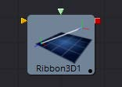 | ||
 |
|||
 |
 |
 |
|
 |
Alembic Mesh 3D [ABc]
有两种方法导入Alembic文件：
- 使用 File > Import > Alembic 菜单选项
- 手动将AlembicMesh3D 工具添加到流程
推荐使用第一种方法。
Alembic格式允许在文件中存储任意的用户数据。由于各种原因，Fusion忽略了大多数元数据。对于如何命名元数据以及元数据在不同的ABC出口商之间可能发生的更改，还没有定义任何约定。当通过菜单选项导入Alembic文件时，转换将被读入样条并传入到工具的Input中，并将与comp一起保存。
这意味着当重新加载comp时，转换是从comp而不是Alembic文件中加载的。mesh的处理方式不同；它们总是从Alembic文件中重新加载。

Controls
Filename
导入的Alembic文件的名称。
Object Name
此输入显示正在导入的Alembic文件中的mesh名称。如果此字段为空，则FBX模型的全部内容将作为单个mesh导入。此输入不能被用户编辑；而通过 File > Import > Alembic工具导入Alembic文件时由Fusion设置。
Sampling Rate
在导入文件时设置帧率。它可以通过使用这个滑块来改变效果，比如慢动作。
Dump File
在首选文本编辑器中打开产生的ASCII码。

Alembic import dialog
- Writer: 创建或写出Alembic文件的插件或应用程序的名称
- Writer Version: 写出Alembic文件的Alembic sdk的版本
- RenderRange: 这将使您了解动画在Alembic文件中的持续时间(以秒为单位)
- DetectedSamplingRates: Fusion检查文件中的帧率并在这里报告它们。这对于确定设置Resampling Rate的值有用。
Hierarchy
如果禁用，Alembic文件中的转换将被压缩到摄像机和mesh中。这导致许多mesh/摄像机连接到Fusion中的一个Merge节点。启用后，您将获得完整的父子层次结构。
Orphaned transforms
如果不选中此选项，则不会导入不父化mesh或相机。例如，如果您有一个框架和关联的mesh模型，模型将被导入为一个Alembic mesh，而骨架将作为Merge3D的树型结构导入。禁用此选项将导致无法导入Merge3D。
Cameras
Near/Far/Apertures/Angles of View/Plane of Focus都是导入的。适配分辨率可以被导入；这取决于作者是否正确地标记了与适配分辨率的元数据。如果您的相机没有正确导入，您应该检查Camera3D.ResolutionGateFit是否被正确地设置。立体(stereo)信息不会被导入。
InverseTransform
导入相机的逆变换(World to Model)。
Points
Alembic支持点类型。这是一组没有方向的3D点。一些3D应用将粒子导出为点，但要记住粒子的方向和方向会丢失；而你只得到了位置。很可能，exocortex Alembic插件可以写出包含方向的额外用户数据。
Meshes
可选地导入UVs和法线。
ResamplingRate
当导出动画时，它以秒为单位存储在磁盘上，而不是以帧为单位。当将Alembic数据融合到Fusion中时，您需要提供一个帧率来重新采样动画。理想情况下，您应该选择它所导出的相同的帧，以便您的采样与原始的采样匹配。检测到的采样率可以在不确定的情况下告诉我们选择什么。
Lights
目前不支持导入。目前还没有关于Alembic光照的通用约定。
Materials
目前不支持导入。目前还没有关于Alembic材质的通用约定模式。
Curves
目前不支持导入。
Multiple UVs
目前不支持导入。目前仍还没有通用约定模式。
Velocities
目前不支持导入。
Cyclic/Acyclic sampling
目前没有实现。均匀抽样是最常见的抽样方式，它工作得很好。我们建议使用FBX用于照明/摄像机/材质，而Alembic仅用于mesh。如果你的相机和Alembic为你工作，那就去做吧。原因是我们的Alembic插件不支持光照/材质，但是对FBX有很好的支持。相机的Alembic导入存在适配分辨率的问题，并且不导入立体(stereo)选项。
Bender 3D [3Bn]
Bender 3D工具是用来基于它的包围盒弯曲(bend)，变尖 (taper)，扭曲(twist)或剪切(shear)三维场景中的几何物体。以3D场景作为输入并输出修改后的3D场景。只有场景中的几何物体被修改。任何灯、相机或材料都不会受到影响。
Bender工具在几何物体中不产生新的顶点；只有存在于几何物体中的顶点才会被改变。因此，当将Bender 3D工具应用于在Fusion中创建的基本形状时，提高原始基本形状中细分(Subdivision)控制的值是一个很好的方法，以提供更高的质量结果。
外部输入
以下输入出现在流程编辑器(Flow Editor)中的工具块上。

Bender3D.SceneInput
[金色，必需的]这个输入需要一个3D场景。
Controls

Bender Type
使用Bender Type选择变形类型来应用到几何物体上。有四种模式可供选择：弯曲(Bend)、变尖 (Taper)、扭转(Twist)和剪切(Shear)。
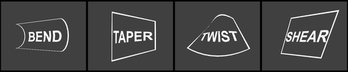
Amount
调整Amount滑块以改变变形的强度。
Axis
Axis控制决定了施加变形的轴，并且根据变形的类型有不同的含义。当弯曲时，它与角度控制一起决定弯曲的轴。在其他情况下，变形应用于指定的轴。
Angle
Angle拇指滚轮控制决定了轴的方向是什么弯曲或剪切。对于变尖 (Taper)或扭转(Twist)变形不可见。
Range
Range控制可用于将变形的影响限制在几何物体的一小部分。当Bender Type设置为剪切(Shear)时，范围控制不可见。
Group Objects
当被选中时，输入场景中的所有对象被分组到一个对象中，该对象在公共中心周围变形，而不是单个地变形每个组件对象。
Camera 3D [3Cm]
Camera 3D工具生成一个虚拟相机，通过它可以观看3D环境。它紧密地模拟了现实和虚拟相机中使用的设置，以尽可能无缝地匹配其他场景元素中使用的相机。
使用Merge 3D工具将摄像机添加到场景中。在监视器中直接显示相机工具只显示一个空场景；照相机什么也看不见。要通过摄像机查看场景，请从引入摄像机的Merge 3D工具中查看场景，或在该Merge 3D的任何下游工具中查看场景。然后在视图中右键单击并从上下文菜单中选择Camera > Cameraname。在右下角找到的轴标上右键单击，将直接显示Camera子菜单。
监视器的视角可能与相机的视角不同，因此通过相机交互得到的视图可能不匹配由Renderer 3D工具实际渲染的图像的真实边界。为了帮助你拍摄照片，向导(Guide)可以被启用，它代表了相机实际看到的部分。在监视器中右键单击并从Guides > Frame Format子菜单中选择一个选项。默认选项将使用Composition > Frame Format首选项中启用的格式。要打开或关闭向导(Guide)，请从监视器上下文菜单中选择Guides > Show Guides，或者在视图处于活动状态时使用Command-G (Mac OS X)或Ctrl-G (Windows)键盘快捷键。
摄像头3D工具还可以用来进行摄像头投影，将2D图像通过摄像头投射到3D空间。这可以作为一个简单的与摄像机对齐的图像平面，也可以作为一个真实的投影，类似于投影仪3D工具的行为，附加的好处是与摄像机对齐。Image Plane、Projection和Materials标签将直到二维图像连接到流编辑器中的Camera 3D工具时才会出现。
相机工具拥有内建的立体(stereo)功能。它们可以控制眼睛的分离和收敛距离。右眼的摄像头可以通过与绿色输入连接的独立摄像头工具进行更换。此外，这里还提供了用于景深渲染的焦点控制平面。
如果你通过将工具栏上的3Cm图标拖拽到3D视图上添加一个摄像头，它会自动将它与你正在观看的场景合并。此外，它将自动设置为当前视角，并将视图设置为通过新相机查看。或者，通过在Camera子菜单下的监视器上下文菜单中的Copy PoV To选项，可以将当前的视角复制到相机(或聚光灯或任何其他对象)中。
外部输入
以下输入出现在流程编辑器中的工具块上。
Camera3D.SceneInput
[金色，必需的]这个输入需要一个3D场景。
Camera3D.RightStereoCamera
[绿色，可选]这个输入应该连接到另一个Camera 3D工具。它被用来覆盖在立体视觉渲染和监视器中用于右眼的内部摄像机。
Camera3D.ImageInput
这个输入需要一个2D图像。在启用相机投影时，以及在使用相机的图像平面控件来生成与相机的视场相连的平面几何物体时，图像被用作纹理。
Controls
该选项卡中的选项用于设置相机的剪切、视场、焦距和立体属性。

Projection Type
使用投影类型按钮选择透视(Perspective)和正投影(Orthographic)相机。一般来说，现实世界中的照相机都是透视照相机。正射影相机采用平行正射影技术，在这种技术中，视场垂直于观看方向。这就产生了一个平行的相机输出，不会因透视而扭曲。
Near/Far Clip
剪切面用来限制场景中的几何物体，它是根据物体与相机的焦点距离来渲染的。这对于确保不渲染非常靠近摄像机的对象以及优化渲染以排除在最终渲染中太过遥远而无用的对象非常有用。
默认视角摄像机忽略此设置，除非Adaptively Adjust Near/Far Clip的复选框控制是禁用的。
这些值以单位表示，因此，一个距离相机20个单位以上的剪切平面对相机来说是不可见的。一个0.1的剪切面意味着任何接近0.1单位的物体都是不可见的。
注意： 在近距和远距剪切面之间的较小范围允许在所有深度计算中更精确。如果一个场景开始在远处的物体上渲染奇怪的工件，试着增加Near Clip平面的距离。
Adaptively Adjust Near/Far Clip
当被选中时，渲染器会自动调整相机的近/远剪辑平面，以匹配场景的区段。此设置覆盖上面描述的近剪辑范围控件和远剪辑范围控件的值。此选项不适用于正投影(Orthographic)相机。
Viewing Volume Size
只有当Projection Type设置为Orthographic时，才会出现Viewing Volume Size控件。它决定了构成摄像机视场的框的大小。
正投影相机与它看到的物体的Z距离不会影响这些物体的比例，只有观看的尺寸会影响。
Angle of View Type
使用Angle of View Type按钮阵列来选择如何度量相机的视角。有些应用程序使用垂直测量，有些使用水平测量，而有些使用对角线测量。改变Angle of View Type将导致下面的Angle of View控制重新计算。
Angle of View
Angle of View定义了可以通过摄像机观看的场景区域。一般来说，人眼比摄像机能看到更多的场景，不同的镜头记录下不同程度的图像。一个大的值产生一个更宽的视角，一个小的值产生一个更窄的，或更紧密聚焦的视角。
视角和焦距控制是直接相关的。较小的焦距产生更宽的视角，因此改变一个控件会自动改变另一个控件以匹配。
Focal Length
在现实世界中，透镜的焦距是指从透镜中心到电影平面的距离。焦距越短，焦平面就越接近透镜的背面。焦距以毫米计。视角和焦距控制是直接相关的。较小的焦距产生更宽的视角，因此改变一个控件会自动改变另一个控件以匹配。
焦距与视角的关系为angle = 2 * arctan[aperture / 2 / focal_length]
利用垂直孔径大小得到垂直视角，利用水平孔径大小得到水平视角。
Plane of Focus (for Depth of Field)
OpenGL渲染器使用这个值来计算景深。它定义了摄像机前一个虚拟目标的距离。
Stereo Method
允许你调整你的立体方法到你喜欢的工作模式。
Toe in
两个相机都指向一个焦点。虽然结果是立体的，但是这种方法引入的垂直视差会引起观众的不适。

Off Axis
通常被认为是创建立体相机对的正确方法，这是Fusiom的默认方法。离轴不引入垂直视差，从而产生压力较小的立体图像。

Parallel
摄像机是平行移动的。因为这是一个纯粹的平行位移，所以没有收敛距离控制。并行不引入垂直视差，从而创建压力较小的立体图像。

Eye Separation
定义两个立体声摄像机之间的距离。如果将Eye Separation设置为大于0的值，那么当选择此工具时，每个摄像头的控件将显示在监视器中。Parallel模式下不存在Convergence Distance控制。
Convergence Distance
这个控制设置了立体的收敛距离，定义为沿着相机z轴的点，它决定了左右眼相机在哪里交汇。
Film Back
Film Gate
Film Gate菜单显示了预设相机类型的列表。选择其中一个选项将自动设置光圈宽度和光圈高度以匹配所选的相机类型。
Aperture Width/Height
光圈宽度和高度滑块控制着摄像机的光圈大小，或者说摄像机的一部分，它可以让真实世界的摄像机接收光线。在视频和胶片相机中，光圈是用来定义每一帧曝光面积的掩模开口。孔径通常用英寸来测量，这是用来控制的单位。
Resolution Gate Fit
确定快门在分辨率中的位置。只有当电影门的相位与输出图像的相位不同时，才会产生效果。此设置对应于Maya Fit Resolution Gate。超扫描模式(Overscan)、水平模式(Horizontal)、垂直模式(Vertical)和填充模式(Fill)分别对应于内部模式(Inside)、宽度模式(Width)、高度模式(Height)和外部模式(Outside)。
- Inside: 图像源将被均匀地缩放，直到它的一个维度(X或Y)与Mask的内部维度相匹配。根据图像源和Mask背景的相对尺寸，可以裁剪图像源的宽度或高度以适应Mask的相应尺寸。
- Width: 图像源将被均匀地缩放，直到它的宽度(X)与Mask的宽度相匹配。根据图像源和Mask的相对尺寸，图像源的Y维可能不符合Mask的Y维，导致图像源在Y中裁剪，或者图像源完全不覆盖Mask的高度。
- Height: 图像源将被均匀地缩放，直到它的高度(Y)与Mask的高度相匹配。根据图像源和Mask的相对尺寸，图像源的X维可能不符合Mask的X维，导致在X中裁剪图像源，或者图像源不完全覆盖Mask的宽度。
- Outside: 图像源将被均匀地缩放，直到它的一个维度(X或Y)与Mask的外部维度相匹配。根据图像源和Mask的相对尺寸，图像源的宽度或高度可裁剪或不符合Mask的相应尺寸。
- Stretch: 图像源将被拉伸成X和Y，以容纳生成的Mask的完整尺寸。这可能导致图像源的可见失真。
Control Visibility
允许您有选择地激活与相机一起显示的屏幕控件。
- Frustrum: 显示相机的实际视锥。
- View Vector: 在观察圆锥内显示一条白线，可用于在并行模式下确定位移。
- Near Clip: 近剪切面。这个平面可以细分以提高可见度。
- Far Clip: 远剪切面。这个平面可以细分以提高可见度。
- Plane of Focus: Plane of Focus根据上面解释的相应滑块。这个平面可以细分以提高可见度。
- Convergence Distance: 使用Stereo模式时的收敛点。这个平面可以细分以提高能见度。
Import Camera
导入相机按钮显示一个对话框，用于从另一个应用程序导入相机。
它支持以下文件类型：
| 文件类型 | 后缀 |
|---|---|
| *LightWave场景 | .lws |
| *Max场景 | .ase |
| *Maya Ascii场景 | .ma |
| *dotXSI | .xsi |
Image
当一个二维图像连接到相机时，会创建一个始终定向的图像平面，以便图像填充相机的视场。图像平面选项卡被隐藏，直到一个二维图像连接到流程上Camera 3D的输入。
除了下面列出的控件之外，这个选项卡中显示的选项与Image Plane工具的控制选项卡中显示的选项相同。请参阅工具文档以获得详细的描述。

Enable Image Plane
使用此复选框来启用或禁用映像平面的创建。
Fill Method
描述当相机有不同的长宽比时如何处理输入图像。
- Inside: 图像源将被均匀地缩放，直到它的一个维度(X或Y)符合Mask的内部尺寸。根据图像源和Mask背景的相对尺寸，可以裁剪图像源的宽度或高度以适应Mask的相应尺寸。
- Width: 图像源将被均匀地缩放，直到它的宽度(X)与Mask的宽度相匹配。根据图像源和Mask的相对维数，图像源的Y维数可能不符合Mask的Y维数，导致要么在Y中裁剪图像源，要么不完全覆盖Mask高度。
- Height: 图像源将被均匀地缩放，直到它的高度(Y)与Mask的高度相匹配。根据图像源和Mask的相对尺寸，图像源的X维可能不符合Mask的X维，导致在X中裁剪图像源，或者图像源不完全覆盖Mask的宽度。
- Outside: 图像源将被均匀地缩放，直到它的一个维度(X或Y)与Mask的外部维度相匹配。根据图像源和Mask的相对尺寸，可以裁剪图像源的宽度或高度，也可以不匹配Mask的相应尺寸。
- Depth: Depth滑块控制图像平面与摄像机的距离。
Projection
如果一个二维图像连接到摄像机，就可以将图像投射到场景中。投影不同于像平面，投影会落在场景的几何物体上，就像在场景中有一个物理投影仪一样。图像以光的形式投射，这意味着渲染器必须被设置为使投射的光照可见。
有关更多信息，请参阅Projector 3D工具。

Enable Camera Projection
选择此复选框以启用连接到摄像机工具的2D图像的投影。
Projection Fit Method
该按钮阵列可用于选择用于将投影图像的相位与摄像机的Field of View相匹配的方法。
Projection Mode
- Light: 将投影定义为聚光灯。
- Ambient Light: 将投影定义为环境光。
- Texture: 允许投射，可以使用其他的灯光。需要一个连接到特定材料的合适输入端口的Catcher工具。
Camera 3D的小提示
当从3D应用程序中导入一个同时用作投影仪的摄像头时，请确保主控件选项卡和投影选项卡上的适配分辨率选项是同步的。只有第一个将自动设置为3D应用程序使用的内容。后者可能需要手动调整。
要实现真正的Parallel Stereo模式，你可以：
- 将一个额外的外部(右)摄像头连接到你的相机的“Right Stereo Camera”输入。
- 创建独立的左右摄像头
- 将转换距离滑块设置为非常大的值99999999999。
从Fusion的3D空间渲染Overscan
如果你想渲染一个超扫描的图像，你也必须修改你的场景的Camera3D。由于超扫描设置不会与来自3D应用程序的相机数据一起导出，所以对于通过.fbx或.ma文件导入的相机来说，这也是必要的。解决的办法是增加胶片背面的宽度和高度，因为每一面都需要额外的像素。
Cube 3D [3Cb]
Cube 3D工具是一种基本的原始几何类型，能够生成简单的cube。该工具还提供了6个额外的图像输入，可用于将纹理映射到立方体的6个面。立方体通常被用作阴影投射对象和环境映射。有关其他基本物体，请参阅Shape 3D工具。
外部输入
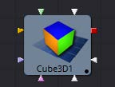
Cube3D.SceneInput
[橙色，可选的]这个输入需要一个3D工具输出的场景。
Cube3D.NameMaterialInput
这6个输入用于定义应用于立方体的6个面的材质。他们将接受有效的二维图像或三维材质。
Controls
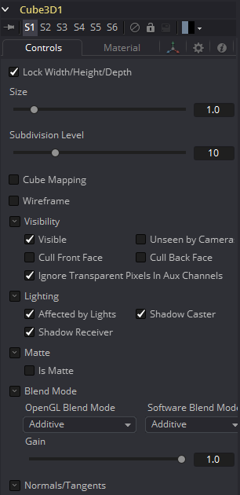
Lock Width/Height/Depth
这个复选框将立方体的Width、Height和Depth尺寸锁在一起，因此它们总是相同的大小。当选中时，只显示一个Size控件，否则将显示单独的Width、Height和Depth滑块。
Size or Width/Height/Depth
如果选择了Lock Width/Height/Depth，则只显示大小，否则将显示单独的Width、Height和Depth滑块。Size和Width滑块重命名为相同的控件，因此，在解锁控件时，应用于Size的任何动画也将应用于Width。
Subdivision Level
使用Subdivision Level滑块设置创建图像平面时使用的细分数量。
如果将OpenGL监视器和渲染器设置为Vertex照明，mesh中的细分越多，表示照明的顶点就越多。由于这个原因，当与灯光交互时，高的细分会很有用。
Cube Mapping
启用Cube Mapping复选框将使多维数据集使用标准的立方映射技术将其第一个纹理覆盖到所有六个面。这种方法要求纹理以十字的形状排列。
Wireframe
启用此复选框将导致Mesh在使用OpenGL渲染时只渲染对象的线框。
Visibility
- Visible: 如果Visibility复选框没有被选中，那么该对象在监视器中将不可见，也不会被Renderer 3D工具渲染到输出图像中。不可见的物体不会投射阴影。
- Unseen by Cameras: 如果选择了Unseen by Cameras复选框，则对象将在监视器中可见(除非Visible复选框被关闭)，而通过相机查看时不可见。对象不会被Renderer 3D工具渲染到输出图像中。当Software渲染器渲染时，未被看到的物体所投射的阴影仍然是可见的，而OpenGL渲染器不能。
- Cull Front Face/Back Face: 使用这些选项在几何物体中剔除(消除)某些多边形的渲染和显示。如果选中了Cull Back Face，那么所有远离相机的多边形将不会被渲染，也不会投射阴影。如果选中了Cull Front Face，所有朝向相机的多边形都将同样被删除。选中两个复选框与取消选中Visible复选框具有相同的效果。
- Ignore Transparent Pixels in Aux Channels: 在以前的Fusion版本中，透明像素被Software/GL渲染器拒绝。更具体地说，软件渲染器拒绝了带有R=G=B=A=0的像素，而GL渲染器拒绝了带有=0的像素。这是可选的。您可能希望这样做的原因是为透明区域获取aux通道(例如，Normals, Z, UVs)。例如，假设在后期，您想要替换一个3D元素上的纹理，该元素在某些区域是透明的，纹理在不同的区域是透明的，那么有透明区域设置辅助通道(特别是UVs)是很有用的。作为另一个例子，假设您正在做后期的DoF。您可能不希望Z通道设置在透明区域上，因为这会给您一个错误的深度。此外，请记住，这种拒绝是基于最终的像素颜色，包括灯光，如果它是开着的。如果你在透明的玻璃材料上有高光，这个复选框不会影响到它。
Lighting
- Affected by Lights: 如果这个复选框没有被选中，场景中的灯光将不会影响到对象，它将不会接收或投射阴影，它将显示在其颜色、纹理或材质的全亮度。
- Shadow Caster: 如果这个复选框未被启用，该对象将不会在场景中的其他对象上投射阴影。
- Shadow Receiver: 如果此复选框未启用，则该对象将不会接收场景中其他对象投射的阴影。
Matte
启用Is Matte选项将对该对象应用一个特殊的纹理，使该对象不仅对摄像机不可见，而且还使直接出现在摄像机后面的所有东西也不可见。此选项将覆盖所有纹理。有关更多信息，请参见3D章节的Matte Objects部分。
- Is Matte: 当被激活时，像素在Z中的后于matte对象像素的对象不会被渲染。
- Opaque Alpha: 将matte对象的alpha值设置为1。此复选框仅在启用is Matte选项时可见。
- Infinite Z: 将Z通道中的值设置为无穷大。此复选框仅在启用is Matte选项时可见。
Blend Mode
Blend Mode指定Renderer在将该对象与场景的其余部分组合时将使用哪种方法。混合模式与2D Merge工具中列出的模式基本相同。有关每种模式的详细解释，请参阅那个工具的部分。
混合模式最初设计用于2D图像。在光照的3D环境中使用它们会产生不希望的结果。为了获得最佳效果，请在软件中渲染的无光照3D场景中使用Apply模式。
- OpenGL Blend Mode: 使用此菜单来选择将在OpenGL渲染器处理几何物体时使用的混合模式。这也是在监视器中查看对象时使用的模式。目前OpenGL渲染器支持三种混合模式。
- Software Blend Mode: 使用此菜单选择在Software渲染器处理几何物体时使用的混合模式。目前，Software渲染器支持Merge工具文档中描述的所有模式，除了Dissolve模式。
Material选项卡
出现在此选项卡中的选项决定此工具创建的几何物体的外观。由于这些控件在生成几何物体的所有工具上都是相同的，因此在本文档的Common 3D控件一节中对这些控件进行了充分的描述。
如果外部3D材质连接到工具块的材质输入，那么这个选项卡中的控件将被“使用外部材质”标签所取代。
Transform选项卡
出现在此选项卡中的选项决定此工具创建的几何物体的位置。由于这些控件在生成几何物体的所有工具上都是相同的，因此在本文档的Common 3D控件一节中对这些控件进行了充分的描述。

Custom Vertex 3D [3Cv]
这是3D几何物体的一个自定义工具,可以用来对顶点操作,例如在一个图像平面上：(px, py, sin(10 *(px ^ 2 + py ^ 2)+ n1))。其他顶点属性如法线、顶点颜色、纹理坐标、切线和速度也可以修改。

注意： 修改3D对象的X、Y和Z位置不会修改法线/切线。你可以在之后用一个ReplaceNormals工具来重新计算法线/切线。
提示： 并非所有的几何物体都有顶点属性。例如，除了粒子和一些导入的FBX/Alembic mesh外，大多数Fusion几何物体都没有顶点颜色。
目前没有任何几何物体有环境坐标。只有粒子的速度。如果一个流不存在于输入几何物体中，则假定它具有一个默认值。
这些默认值为：
| 顶点属性 | 默认值 |
|---|---|
| Tangentu (tux, tuy, tuz) | (1,0,0) |
| Tangentv (tvx, tvy, tvz) | (0,1,0) |
| Normals (nx, ny, nz) | (0,0,1) |
| Vertexcolor (vcr, vcg, vcb, vca) | (1,1,1,1) |
| Velocity (vx, vy, vz) | (0,0,0) |
| Envcoord (eu, ev, ew) | (0,0,0) |
| Texcoord (tu, tv, tw) | (0,0,0) |
注意： 如果流的表达式不是无关紧要的，那么就会创建输入几何上缺少的流。流的值将如上面所示。例如，如果输入的几何物体没有法线，那么(nx, ny, nz)的值总是(0,0,1)。要改变它，您可以使用ReplaceNormals工具预先生成它们。
Controls
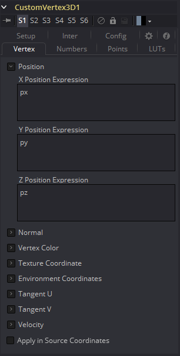
Displace 3D [3Di]
Displace 3D工具用于根据所参考的图像沿物体的法线置换物体的顶点。几何学上的纹理坐标用来决定图像的采样点。
当使用Displace 3D时，请记住它只会置换现有的顶点，而不会对物体进行细化。为了获得更精细的置换，增加正在被置换的几何物体的细分量。注意，置换图像中的像素可能包含负值。
通过Displace 3D工具传递粒子系统将禁用pEmitter中设置的Always Face Camera选项。粒子不被视为点状物体；这四个粒子顶点中的每一个都是单独置换的，这可能是首选的结果，也可能不是。
外部输入
Displace3D.SceneInput
[橙色，必需的]这个输入需要一个3D场景。
Displace3D.Input
[绿色，可选的] 这个输入需要一个2D图像被用作置换贴图。如果没有提供图像，这个工具其实会将场景直接传递到它的输出。
Controls
Channel
确定图像的哪个通道连接到Displace3D。输入被用来置换几何物体。
Scale and Bias
使用这些滑块来scale(放大)和bias(偏移)位移。先应用scale，再应用bias。
Camera Displacement
Point to Camera
当Point to Camera复选框被启用时，每个顶点都被置换向相机而不是沿着它的法线。这个选项的一个可能用途是移动相机的图像平面。通过相机观看时被置换的相机图像平面没有变化，但会在3D空间中变形，这使得可以与其他3D层在Z通道中正确交互。
Camera
当Point to Camera被选中时时，这个下拉框用于选择场景中的哪个摄像机监视器被用于摄像机的置换。
Duplicate 3D [3Dp]
Duplicate 3D工具可以用来快速复制场景中的任何几何物体，对每个图形进行连续的转换，并创建重复的模式和复杂的对象数组。Jitter选项卡中的选项允许非均匀的转换，如随机定位或大小。
外部输入

Duplicate3D.SceneInput
[橙色，必需的]这个输入需要一个3D场景。
Controls

First/Last Copy
使用此范围控件来设置要制作多少个几何物体副本。每个副本是最后一个副本的副本，因此，如果该控件设置为[0,3]，则拷贝父副本，然后副本被拷贝，然后拷贝副本的副本，以此类推。当使用下面的控件对每个副本应用转换时，这将允许你做一些有趣的效果。
对于First Copy和Last Copy使用同一个值将只显示原始输入。将First Copy设置为大于0的值将排除原始输入，只显示副本。
Time Offset
使用Time Offset滑块按每个拷贝的设置数量来偏移任何应用于源几何物体的动画。例如，将值设置为-1.0并使用一个立方体在Y轴上旋转作为源。第一个副本将显示前一帧的动画。第二个副本会显示前一帧的动画，等等。这在纹理的平面上使用会非常有用，例如，可以显示一个片段的连续帧。
Transform Method
Accumulated
当设置为Accumulated时，每个对象复制从前一个对象的位置开始，并从那里进行变换。结果将再次为下一个副本变换。
Linear
当设置为Linear时，变换将乘以复制的数量，然后依次应用总的缩放、旋转和平移，独立于其他副本。

Transform Order
使用这些按钮，可以设置计算转换的顺序，默认为Scale-Rotation-Transform (SRT)。
使用不同的顺序将导致最终对象的不同位置。
XYZ Offset
这三个滑块告诉工具在每个副本上应用多少偏移量。X偏移量为1将会使每一个副本1与上一个副本沿着X轴偏移。
Rotation Order
这些按钮可以用来设置旋转应用于几何物体的顺序。将旋转顺序设置为XYZ将首先在X轴上应用旋转，然后是Y轴旋转，然后是Z轴旋转。
XYZ Rotation
这三个旋转滑块告诉工具要对每个副本应用多少旋转。
XYZ Pivot
Pivot控件确定旋转每次拷贝时使用的中心点的位置。
Lock XYZ
当选择Lock XYZ复选框时，对复制缩放的任何调整将同时应用于所有三个轴。如果这个复选框被禁用，那么缩放滑块将被替换为X、Y和Z缩放的单个滑块。
Scale
缩放控件告诉Duplicate对每个副本应用多少缩放。
Jitter

Random Seed/Randomize
Random Seed用于“seed”于复制对象的抖动(jitter)量。两个具有相同设置但不同随机种子的Duplicate工具将产生两个完全不同的结果。单击Randomize按钮来分配一个随机的种子值。
Time Offset
使用Time Offset滑块按每个拷贝的设置数量来偏移任何应用于源几何物体的动画。例如，将值设置为-1.0并使用一个立方体在Y轴上旋转作为源。第一个副本将显示前一帧的动画。第二个副本会显示前一帧的动画，等等。这在纹理的平面上使用会非常有用，例如，可以显示一个片段的连续帧。
Translation XYZ Jitter
使用这三个控件来调整复制对象的位移的变化量。
Rotation XYZ Jitter
使用这三个控件来调整复制对象的旋转的变化量。
Pivot XYZ Jitter
使用这三个控件来调整复制对象的旋转中心的变化量。这只影响附加的抖动旋转，而不影响Controls选项卡中的旋转设置所产生的旋转。
Scale XYZ Jitter
使用此控件调整复制对象的缩放变化量。取消勾选Lock XYZ复选框，以在所有三个轴上独立地调整比例变化。
FBX Exporter 3D [FBX]
FBX Exporter提供了一种方法，可以将Fusion的3D场景导出到FBX场景交换格式。Fusion中的每个节点都是导出文件中的单个对象。对象、灯光和相机将使用创建它们的节点的名称。可以将该工具设置为为整个场景一个文件，或每帧一个文件。
除了FBX格式之外，该工具还可以导出到3D Studio的.3ds、Collada的.dae、Autocad的.dxf和Alias的.obj格式。
External Inputs
FBXExporter.Input
[橙色，必需的]这个输入需要一个3D场景。
Controls
Filename
此文件浏览器控件可用于设置工具输出的文件。单击黄色文件夹图标打开文件浏览器对话框。
Format
此控件用于设置输出文件的格式。可以导出以下文件格式：
| 文件类型 | 后缀 |
|---|---|
| FBX ascii | (*.fbx) |
| FBX 5.0 binary | (*.fbx) |
| Autocad DXF | (*.dxf) |
| 3D Studio 3Ds | (*.3ds) |
| Alias OBJ | (*.obj) |
| Collada DAE | (*.dae) |
并非所有格式都支持此工具的所有特性。例如，obj格式不支持处理动画。
Version
版本下拉菜单显示了上面控件选择的格式的可用版本。菜单的内容将动态变化，以反映该格式的可用版本。如果所选格式仅提供一个选项，则此菜单将被隐藏。
FBX格式的默认选择使用FBX200611。
Geometry/Lights/Cameras
这三个复选框控件决定该工具是否尝试导出指定的场景元素。例如，取消几何物体和灯光但保留选择的相机，现在将只输出场景中的相机。
Reduce Constant Keys
如果相邻的关键帧具有相同的值，启用此选项将自动删除关键帧。
File Per Frame (No Animation)
启用此选项将强制工具在每帧导出文件，导致一串序列文件。这将禁用动画的导出。
Set Sequence Start
通常，Fusion会使用工程文件的渲染范围来确定将文件序列渲染到磁盘时使用的数字序列。启用此复选框以显示Sequence Start Frame控件，以将序列中的第一个帧的数量设置为自定义值。
Sequence Start Frame
此转轮控件可用于为渲染文件名的数字序列设置显式的开始帧。例如，如果Global Start设置为1，并渲染1 - 30帧，文件通常编号为0001 - 0030。如果Sequence Start Frame设置为100，渲染输出将从100-131被编号。
FBX Mesh 3D [FBX]
FBXMesh3D工具用于以FilmBox (FBX)格式保存的场景文件中导入多边形几何体。它还可以从OBJ、3DS、DAE和DXF场景文件中导入物体。这提供了一种使用比Fusion内建物体更复杂几何体的方法。
当使用此工具导入几何物体时，FBX文件中包含的所有物体将被组合成一个具有单个中心点和变换的mesh。FBXMesh工具将忽略任何应用于物体的动画。
File > Import > FBX工具可用于导入FBX并为文件中包含的每个摄像机、灯光和mesh创建单独的工具。这个工具还可以保留物体的动画。
如果启用了Global > General > Auto Clip Browse选项(默认)，则将此工具添加到工具栏或菜单的composition中，将自动显示文件浏览器。
外部输入
FBXMesh3D.SceneInput
[橙色，必需的]这个输入需要一个3D场景作为输入。
FBXMesh.MaterialInput
[绿色，可选的]该输入将接受二维图像或三维材质。如果提供了2D图像，则它将作为构建在工具中的基本材质的diffuse纹理映射。如果一个3D材质被连接，那么基本材质将被禁用。
Controls


Size
大小滑块控制导入的FBX几何物体的大小。FBX mesh倾向于比Fusion的默认单位尺度大得多，因此该控制对于扩展导入的几何物体以匹配Fusion环境是有用的。
FBX File
此控件显示当前加载的FBX的文件名。单击黄色文件夹的图标，打开一个文件浏览器，可用于定位FBX文件。尽管该工具的名称不同，但该工具还可以加载各种其他格式。
| 文件类型 | 后缀 |
|---|---|
| FBX ascii | (*.fbx) |
| FBX 5.0 binary | (*.fbx) |
| Autocad DXF | (*.dxf) |
| 3D Studio 3Ds | (*.3ds) |
| Alias OBJ | (*.obj) |
| Collada DAE | (*.dae) |
Object Name
此输入显示正在导入的FBX文件中的mesh名称。如果该字段为空，那么FBX物体的全部内容将作为一个mesh导入。此输入不能被用户编辑；当通过File > Import > FBX工具导入FBX文件时，由Fusion设置。
Take Name
此输入显示从FBX文件中使用的动画的名称。如果该字段为空，则不会导入动画。此输入不能被用户编辑；当通过File > Import > FBX工具导入FBX文件时，由fusion设置。
Wireframe
启用此复选框将导致mesh只渲染对象的线框。目前，只有OpenGL渲染器支持线框渲染。
Visibility
- Visible: 如果Visibility复选框没有被选中，那么该对象在监视器中将不可见，也不会被Renderer 3D工具渲染到输出图像中。不可见的物体不会投射阴影。
- Unseen by Cameras: 如果选择了Unseen by Cameras复选框，则对象将在监视器中可见(除非Visible复选框被关闭)，而通过相机查看时不可见。对象不会被Renderer 3D工具渲染到输出图像中。当Software渲染器渲染时，未被看到的物体所投射的阴影仍然是可见的，而OpenGL渲染器不能。
- Cull Front Face/Back Face: 使用这些选项在几何物体中剔除(消除)某些多边形的渲染和显示。如果选中了Cull Back Face，那么所有远离相机的多边形将不会被渲染，也不会投射阴影。如果选中了Cull Front Face，所有朝向相机的多边形都将同样被删除。选中两个复选框与取消选中Visible复选框具有相同的效果。
- Ignore Transparent Pixels in Aux Channels: 在以前的Fusion版本中，透明像素被Software/GL渲染器拒绝。更具体地说，软件渲染器拒绝了带有R=G=B=A=0的像素，而GL渲染器拒绝了带有=0的像素。这是可选的。您可能希望这样做的原因是为透明区域获取aux通道(例如，Normals, Z, UVs)。例如，假设在后期，您想要替换一个3D元素上的纹理，该元素在某些区域是透明的，纹理在不同的区域是透明的，那么有透明区域设置辅助通道(特别是UVs)是很有用的。作为另一个例子，假设您正在做后期的DoF。您可能不希望Z通道设置在透明区域上，因为这会给您一个错误的深度。此外，请记住，这种拒绝是基于最终的像素颜色，包括灯光，如果它是开着的。如果你在透明的玻璃材料上有高光，这个复选框不会影响到它。
Lighting
- Affected by Lights: 如果这个复选框没有被选中，场景中的灯光将不会影响到对象，它将不会接收或投射阴影，它将显示在其颜色、纹理或材质的全亮度。
- Shadow Caster: 如果这个复选框未被启用，该对象将不会在场景中的其他对象上投射阴影。
- Shadow Receiver: 如果此复选框未启用，则该对象将不会接收场景中其他对象投射的阴影。
Matte
启用Is Matte选项将对该对象应用一个特殊的纹理，使该对象不仅对摄像机不可见，而且还使直接出现在摄像机后面的所有东西也不可见。此选项将覆盖所有纹理。有关更多信息，请参见3D章节的Matte Objects部分。
- Is Matte: 当被激活时，像素在Z中的后于matte对象像素的对象不会被渲染。
- Opaque Alpha: 将matte对象的alpha值设置为1。此复选框仅在启用is Matte选项时可见。
- Infinite Z: 将Z通道中的值设置为无穷大。此复选框仅在启用is Matte选项时可见。
Blend Mode
Blend Mode指定Renderer在将该对象与场景的其余部分组合时将使用哪种方法。混合模式与2D Merge工具中列出的模式基本相同。有关每种模式的详细解释，请参阅那个工具的部分。
混合模式最初设计用于2D图像。在光照的3D环境中使用它们会产生不希望的结果。为了获得最佳效果，请在软件中渲染的无光照3D场景中使用Apply模式。
- OpenGL Blend Mode: 使用此菜单来选择将在OpenGL渲染器处理几何物体时使用的混合模式。这也是在监视器中查看对象时使用的模式。目前OpenGL渲染器支持三种混合模式。
- Software Blend Mode: 使用此菜单选择在Software渲染器处理几何物体时使用的混合模式。目前，Software渲染器支持Merge工具文档中描述的所有模式，除了Dissolve模式。
Material选项卡
出现在此选项卡中的选项决定此工具创建的几何物体的外观。由于这些控件在生成几何物体的所有工具上都是相同的，因此在本文档的Common 3D控件一节中对这些控件进行了充分的描述。
如果外部3D材质连接到工具块的材质输入，那么这个选项卡中的控件将被“使用外部材质”标签所取代。

Transform选项卡
出现在此选项卡中的选项决定此工具创建的几何物体的位置。由于这些控件在生成几何物体的所有工具上都是相同的，因此在本文档的Common 3D控件一节中对这些控件进行了充分的描述。

Fog 3D [3Fo]
Fog 3D工具将基于深度提示的雾应用到场景中。它是三维版本的Fog工具，在深度像素范畴。它设计成完全在三维空间中工作，在渲染过程中充分利用了景物的抗锯齿和景深。
Fog 3D工具本质上是通过根据物体与摄像机的距离进行颜色校正来重新绘制场景中的几何物体。一个可选的密度纹理图像可以用来应用变化到校正。
外部输入

Fog3D.SceneInput
[橙色，必需的]这个输入需要一个3D场景。
Fog3D.DensityTexture
[绿色，可选的]这个输入需要一个2D图像。该工具创建的雾的颜色乘以图像中的像素。在为密度纹理创建图像时，请记住，纹理是通过相机有效地投影到场景上的。
Controls
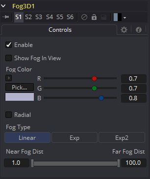
Enable
使用此复选框启用或禁用该工具。
Show Fog in View
默认情况下，该工具创建的雾只有在使用Camera工具查看场景时才可见。当启用这个复选框时，从所有的视角都可以看到场景中的雾。
Color
这个控件可以用来设置雾的颜色。如果已经提供了，颜色也乘以密度纹理图像。
Radial
在默认情况下，雾是基于垂直距离到一个平面(与近平面平行)通过眼睛点。当Radial选项选中时，使用到眼点的径向距离而不是垂直距离。垂直距离雾的问题在于，当你移动相机的时候，物体移动到中心，即使它们与眼睛保持相同的距离，它们也会变得不那么雾化。Radial 雾修复这个问题。有时Radial雾是不可取的。例如，如果你将一个靠近相机的物体雾化，比如像一个图像平面，在边缘完全模糊的情况下，图像平面的中心可以不模糊。
Fog type
此控件用于确定应用于雾的衰减类型。
- Linear: 定义雾的线性衰减。
- Exp: 创建指数级非线性衰减。
- Exp2: 创建更强的指数衰减。
Near/Far Fog Distance
该控件将场景中的雾的范围表示为与摄像机的距离单位。Near Distance决定雾从哪里开始，Far Distance决定雾的最大影响点。雾是累积的，所以物体离摄像机越远，雾就越明显。
Image Plane 3D [3Im]
Image Plane工具在三维空间中产生二维平面几何物体。该工具最常见的用处是在三维空间中表示二维图像。工具块上的图像输入提供了来自composition中另一个源的矩形的纹理。图像平面的比例是由其diffuse纹理的图像的比例决定的。如果平面几何尺寸与纹理图像无关，则使用Shape 3D工具。
外部输入
Imageplane3D.SceneInput
[橙色，可选的]这个输入需要一个3D场景。由于该工具创建了物体，因此它不是必需的。
Imageplane3D.MaterialInput
[绿色，可选的]该输入将接受二维图像或三维材质。如果提供了2D图像，则它将作为工具中基本材质的diffuse纹理映射。如果连接了3D材质，那么基本材质将被禁用。
Controls
Lock Width/Height
当被选中时，平面的细分将被均匀地应用于X和Y。当未被选中时，有两个滑动条用于单独控制X和Y中的细分。
Subdivision Level
使用Subdivision Level滑块设置创建图像平面时使用的细分数量。如果Open GL监视器和renderer被设置为Vertex光照，则mesh中的细分越多，就可以使用越多的顶点来表示照明。由于这个原因，当与灯光交互时，高细分会很有用。
Wireframe
启用此复选框将导致Mesh在使用OpenGL渲染时只渲染物体的线框。
Visibility
- Visible: 如果Visibility复选框没有被选中，那么该对象在监视器中将不可见，也不会被Renderer 3D工具渲染到输出图像中。不可见的物体不会投射阴影。
- Unseen by Cameras: 如果选择了Unseen by Cameras复选框，则对象将在监视器中可见(除非Visible复选框被关闭)，而通过相机查看时不可见。对象不会被Renderer 3D工具渲染到输出图像中。当Software渲染器渲染时，未被看到的物体所投射的阴影仍然是可见的，而OpenGL渲染器不能。
- Cull Front Face/Back Face: 使用这些选项在几何物体中剔除(消除)某些多边形的渲染和显示。如果选中了Cull Back Face，那么所有远离相机的多边形将不会被渲染，也不会投射阴影。如果选中了Cull Front Face，所有朝向相机的多边形都将同样被删除。选中两个复选框与取消选中Visible复选框具有相同的效果。
- Ignore Transparent Pixels in Aux Channels: 在以前的Fusion版本中，透明像素被Software/GL渲染器拒绝。更具体地说，软件渲染器拒绝了带有R=G=B=A=0的像素，而GL渲染器拒绝了带有=0的像素。这是可选的。您可能希望这样做的原因是为透明区域获取aux通道(例如，Normals, Z, UVs)。例如，假设在后期，您想要替换一个3D元素上的纹理，该元素在某些区域是透明的，纹理在不同的区域是透明的，那么有透明区域设置辅助通道(特别是UVs)是很有用的。作为另一个例子，假设您正在做后期的DoF。您可能不希望Z通道设置在透明区域上，因为这会给您一个错误的深度。此外，请记住，这种拒绝是基于最终的像素颜色，包括灯光，如果它是开着的。如果你在透明的玻璃材料上有高光，这个复选框不会影响到它。
Lighting
- Affected by Lights: 如果这个复选框没有被选中，场景中的灯光将不会影响到对象，它将不会接收或投射阴影，它将显示在其颜色、纹理或材质的全亮度。
- Shadow Caster: 如果这个复选框未被启用，该对象将不会在场景中的其他对象上投射阴影。
- Shadow Receiver: 如果此复选框未启用，则该对象将不会接收场景中其他对象投射的阴影。
Matte
启用Is Matte选项将对该对象应用一个特殊的纹理，使该对象不仅对摄像机不可见，而且还使直接出现在摄像机后面的所有东西也不可见。此选项将覆盖所有纹理。有关更多信息，请参见3D章节的Matte Objects部分。
- Is Matte: 当被激活时，像素在Z中的后于matte对象像素的对象不会被渲染。
- Opaque Alpha: 将matte对象的alpha值设置为1。此复选框仅在启用is Matte选项时可见。
- Infinite Z: 将Z通道中的值设置为无穷大。此复选框仅在启用is Matte选项时可见。
Blend Mode
Blend Mode指定Renderer在将该对象与场景的其余部分组合时将使用哪种方法。混合模式与2D Merge工具中列出的模式基本相同。有关每种模式的详细解释，请参阅那个工具的部分。
混合模式最初设计用于2D图像。在光照的3D环境中使用它们会产生不希望的结果。为了获得最佳效果，请在软件中渲染的无光照3D场景中使用Apply模式。
- OpenGL Blend Mode: 使用此菜单来选择将在OpenGL渲染器处理几何物体时使用的混合模式。这也是在监视器中查看对象时使用的模式。目前OpenGL渲染器支持三种混合模式。
- Software Blend Mode: 使用此菜单选择在Software渲染器处理几何物体时使用的混合模式。目前，Software渲染器支持Merge工具文档中描述的所有模式，除了Dissolve模式。
Material选项卡
出现在此选项卡中的选项决定此工具创建的几何物体的外观。由于这些控件在生成几何物体的所有工具上都是相同的，因此在本文档的Common 3D控件一节中对这些控件进行了充分的描述。
如果外部3D材质连接到工具块的材质输入，那么这个选项卡中的控件将被“使用外部材质”标签所取代。
Transform选项卡
出现在此选项卡中的选项决定此工具创建的几何物体的位置。由于这些控件在生成几何物体的所有工具上都是相同的，因此在本文档的Common 3D控件一节中对这些控件进行了充分的描述。
Locator 3D [3Lo]
Locator 3D工具的目的是将3D空间中的一个点转换为2D坐标，其他工具可以将其用作表达式或修饰器的一部分。
当Locator带有相机和输出图像的尺寸时，它将把3D控件的坐标转换为2D屏幕空间。2D位置成为一个数字输出，可以连接到或从其他工具。例如，要将椭圆的中心连接到Locator的2D位置，请右键单击Mask center控件，并选择Connect To > Locator 3D > Position。
提供给Locator输入的场景必须包含投影坐标的摄像机。因此，最佳的实现是在将摄像机引入场景的merge之后放置Locater。
如果一个物体连接到Locator工具的第二个输入，那么Locator将定位在对象的中心，而Transformation选项卡的Offset XYZ滑块将应用在对象的本地坐标空间而不是全局场景空间中。这对于跟踪一个对象的位置非常有用，而不考虑后续的任何其他转换。
外部输入
Locator3D.SceneInput
[橙色，必需的]这个输入需要一个3D场景。
Locator3D.Target
[绿色，可选的]这个输入需要一个3D场景。当提供时，场景的转换中心用于设置定位器的位置。定位器的Transform控件从这个位置变为偏移量。
Controls
Size
size滑块用于设置Locater在屏幕上的十字准线的大小。
Color
基本的Color控件是用来设置Locater在屏幕上的十字准线的颜色。
Matte
启用Is Matte选项将对该对象应用一个特殊的纹理，使该对象不仅对摄像机不可见，而且还使直接出现在摄像机后面的所有东西也不可见。此选项将覆盖所有纹理。有关更多信息，请参见3D章节的Matte Objects部分。
- Is Matte: 当被激活时，像素在Z中的后于matte对象像素的对象不会被渲染。
- Opaque Alpha: 将matte对象的alpha值设置为1。此复选框仅在启用is Matte选项时可见。
- Infinite Z: 将Z通道中的值设置为无穷大。此复选框仅在启用is Matte选项时可见。
Sub ID
Sub ID滑块可用于选择特定物体的单个子元素，如由Text 3D工具生成的单个字符，或由Duplicate 3D工具创建的特定副本。
Make Renderable
定义OpenGL渲染器是否将Locator渲染为可见对象。Software渲染器目前不能渲染线条，因此会忽略这个选项。
Unseen by Camera
当选中Make Renderable选项时，将出现这个复选框控件。如果选中了Unseen by Camera复选框，那么Locater将在监视器中可见，但不会被Renderer 3D工具渲染成输出图像。
Camera Settings
- Camera: 这个下拉控件用于在场景中选择相机，该场景定义用于3D到2D坐标转换的屏幕空间。
- Use Frame Format Settings: 选择这个复选框，以覆盖宽度、高度和像素纵横比的控件，并强制它们使用composition的Frame Format首选项中定义的值替代。
- Width, Height and Pixel Aspect: 为了让Locater生成正确的2D转换，它必须知道图像的尺寸和比例。这些控件应该设置为与上面指定的相机关联的渲染器生成的图像相同的尺寸。右键单击这些控件将显示包含在composition首选项中配置的Frame Format的上下文菜单。
Merge 3D [3Mg]
Merge 3D工具用于将独立的3D元素组合到相同的3D环境中。
例如，用一个图像平面、一个相机和一个光照创建的场景，相机将无法看到图像平面而且光照也不会影响图像平面，除非所有三个对象通过Merge 3D工具被引入相同环境。
工具块最初只显示两个输入，但是当每个输入都被连接时，一个新的输入将出现在工具上，确保始终有一个可以向场景中添加新元素的自由输入。
Merge提供了Fusion的3D套件中大多数工具上的标准转换控件。与这些工具不同，对Merge的变换、旋转或缩放所做的更改会影响到连接到Merge的所有对象。这种行为构成了Fusion 3D环境中所有父子关系的基础。
外部输入

Merge3D.SceneInput[#]
[任意，见描述]这些输入需要一个3D场景。当构造工具时，它将显示两个输入。此工具可以接受的输入数量没有限制。该工具根据需要动态添加更多的输入，确保始终至少有一个可用于连接的输入。
Controls

Pass Through Lights
当选中Pass Through Lights复选框时，光照将透过Merge至其输出，从而影响到下游的元素。通常情况下，灯光不会通过下游来影响场景的其他部分。这通常用于确保投影不应用于稍后在场景中引入的几何物体。
Transform选项卡
出现在此选项卡中的选项决定此工具创建的几何物体的位置。由于这些控件在生成几何物体的所有工具上都是相同的，因此在本文档的Common 3D控件一节中对这些控件进行了充分的描述。

Override 3D [3Ov]
Override工具允许您同时为3D场景中的每个物体更改物体特定的选项。这很有用，例如，当您希望将输入场景中的每个对象设置为线框时。此外，该工具是为3D粒子系统和Text 3D工具设置wireframe、visibility、lighting、matte和ID选项的唯一方法。
它经常与Replace Material工具一起使用，以产生隔离通道。例如，可以将一个场景分支到一个Override工具，该工具关闭受灯光影响的每个工具的属性，然后连接到一个Replace Material工具，该工具应用一个Falloff着色器来产生通过场景的衰减。
外部输入
[橙色，必需的]这个输入需要一个3D场景。
Controls
在Override工具中找到的控件的哲学非常直白。首先，使用Do[option]复选框选择要覆盖的选项。这将显示可以用来设置选项本身的值的控件。这里没有对单独选项的解释；可以在任何物体创建工具(如Image Plane、Cube或Shape工具)中找到每个工具的完整描述。
Do [option]
启用此选项的覆盖。
[Option]
如果启用了Do[option]复选框，那么属性本身的控件将变得可见。所有上游对象的属性的控件值都被新值覆盖。
Point Cloud 3D [3PC]
Point Cloud通常是由3D跟踪或建模软件创建的大量空位置（点）。当由3D跟踪软件制作时，这些点通常代表每个被跟踪的模型 ，以创建3D相机路径。这些点云可用于识别地面，并将其他3D元素与跟踪图像定位。Point Cloud 3D工具通过导入3D场景来创建点云。
外部输入

Pointcloud3D.SceneInput
[橙色，必需的]这个输入需要一个3D场景。
Controls

Lock X/Y/Z
取消选中此复选框，以提供对云中各点的X、Y和Z十字准线长度的单独控制。
Size
这些滑块可用于增加表示每个点的屏幕上十字准线的大小。
Density
这个滑块定义了显示特定点的概率。如果值为1，则显示所有点。0.2的值表示只显示五分之一。
Color
使用标准Color控件来设置屏幕上的横线控件的颜色。
Import Point Cloud
Import Point Cloud按钮显示一个对话框，用于从另一个应用程序导入点云。支持的文件有：
| 文件类型 | 后缀 |
|---|---|
| *Alias's Maya | .ma |
| *3DS Max ASCII Scene Export | .ase |
| *NewTek's LightWave | .lws |
| *Softimage XSI's | .xsi |
Make Renderable
确定点云在OpenGL 视窗中是否可见，以及用OpenGL renderer的最终渲染中是否可见。Software renderer目前不支持该工具的可见十字线渲染。
Unseen by Camera
当选择Make Renderable选项时，将出现这个复选框控件。如果选中了Unseen by Camera复选框，则可以在监视器中看到点云，但不能通过Renderer 3D工具将其渲染到输出图像中。
屏幕上的上下文菜单

通常，导入的的点云中的一个或多个点会被手动分配，以跟踪特定特性的位置。这些点通常有不同于云中的其他点的名称。要查看一个点的当前名称，请将鼠标指针直接悬停在一个点上，过一会儿会出现一个小的弹出窗口，显示该点的名称。
当Point Cloud 3D工具被选中时，一个子菜单将被添加到显示监视器的上下文菜单中，其中有几个选项可以使定位、重命名以及将这些点与点云的其他部分分开变得简单。上下文菜单包含以下选项：
Find
从显示的监视器上下文菜单中选择此选项将打开一个对话框，该对话框可用于搜索并选择一个点的名称。将选择与模式匹配的每个点。
Rename
通过从上下文菜单中选择Rename，重命名一个或多个点。在出现的对话框中键入新名称并单击回车。点现在有了这个名称，末尾增加了一个四位数。例如，名称window将是window0000，多个点将是window0000、window0001等。名称必须是有效的Fusion标识符(即，不允许空格，名称不能以数字开头)。
Delete
选择此选项将删除当前选中的点。
Publish
通常，云中的一个点的确切位置是不公开的。要公开位置，请选择一个或多个点，然后从上下文菜单中选择publish选项。这将向控制面板添加一个坐标控件，用于显示该点的当前位置。
额外的工具栏和快捷键

| 操作 | 快捷键 |
|---|---|
| 删除选中的点 | Del |
| 全选 | Shift+A |
| 查找点 | Shift+F |
| 重命名选中的点 | F2 |
| 创建新的点 | Shift+C |
| 切换None/Selected/published/All点的名称 | Shift+N |
| 切换None/Selected/published/All点的位置 | Shift+L |
| 发布选中的点 | Shift+P |
| 取消发布选中的点 | Shift+U |
| 在选中的点上创建一个形状 | Shift+S |
| 创建并安装一个ImagePlane到选中的点 | Shift+I |
| 在选定的点上创建一个 Locator | Shift+O |
Projector 3D [3Pj]
Projector 3D工具用于在三维几何物体上投影图像。这在很多方面都很有用：用多个层来纹理对象，在多个独立的对象上应用纹理，从相机的视角投射背景照片，基于图像的渲染技术等等。Projector工具只是几种能够投射图像和纹理的工具之一。每种方法都有优缺点。有关每种方法的更多信息，请参阅3D章节的投影部分。
如果物体相对于投影仪3D移动，投影纹理可以“滑动”到物体上，或者，通过Merge 3D将两者组合在一起，它们可以作为一个移动，纹理将保持锁定在物体上。
最好理解Projector 3D工具的功能和限制的方法是把Projector当成Spotlight工具的变体。当当在Light或Ambient Light投影模式时，Projector 3D工具本质上是一盏灯的事实导致了一些重要的后果：
- 为了使投影的结果可见，必须打开灯光。
- 投影仪发出的光被视为漫反射/高光。这意味着它将受到表面法线的影响，并可能导致镜面高光。如果不希望这样，设置Projector 3D为Ambient Light通道。
- Enabling Shadows将导致Projector 3D投射阴影。
- 就像其他光线一样，Projector 3D发出的光线只会影响到第一个Merge 3D的对象，该Merge 3D是在Projector 3D工具流的下游。启用Merge 3D的Pass Through Lights复选框将允许投影到更下游的物体。
- Projector 3D发出的光由物体上的照明选项设置和材料上的接收照明选项控制。
- 投影图像中的Alpha值不会在Light或Ambient Light模式下剪切几何物体。使用纹理模式来替代。
- 如果两个投影重叠，它们的光线效果就会相加。
若要为非漫反射颜色通道(如Specular Intensity或Bump)投射可重亮的纹理或纹理，请使用Texture投影模式：
- Texture模式下的投影将只对使用Catcher工具输出的所有或部分材质应用于该对象的对象进行影响。
- Texture模式投影将根据投影图像的alpha通道剪切几何物体。
有关其他详细信息，请参阅Catcher工具一节。
Camera 3D工具还提供了投影功能，当投影与摄像机匹配时应该使用该工具，因为该工具对光圈、胶片背面和剪切平面有更多的控制。Projector 3D被设计用来作为一个定制的光线在3D场景中分层和纹理。投影仪可以更好地控制光线强度、颜色、衰减和阴影。
当在OpenGL view或OpenGL renderer中使用Projectors时，为了查看主视图中投影的结果，照明必须设置为Per-pixel(默认)。Per-pixel照明模式需要从你的显卡上获得一定级别的着色器支持。即使显卡不支持像素着色，在使用Software renderer时投影仍然是可见的。
外部输入

Projector3D.SceneInput
[橙色，可选的]这个输入需要一个3D场景。如果一个场景连接到这个输入，那么应用到聚光灯上的变换也会影响场景的其余部分。
Projector3D.ProjectiveImage
[白色，可选的]这个输入需要一个2D图像用于投影。
Controls


Enabled
当选中这个复选框时，Projector就会影响场景。清除复选框以关闭它。
Color
在投影到场景之前，输入图像乘以这个颜色。
Intensity
当使用Light和Ambient Light投影模式时，使用此滑块设置投影的强度。在Texture模式下，这个选项将缩放乘以颜色的纹理Color值。
Decay Type
Projector默认No Falloff，这意味着无论投影仪到几何物体的距离有多远，它的光线在几何物体上的强度都是相等的。若要使强度随距离下降，请将Decay Type设置为Linear模式或Quadratic模式。
Angle
工具的Cone Angle是指Projector发出其全部强度的锥形的宽度。角度越大，锥角越宽，最高可达90度。
Fit Method
Fit Method确定投影在投影锥中如何拟合。
首先要知道的是，虽然这个文档可能称之为“圆锥(cone)”，但Projector3D工具和Camera3D工具并不投射实际的锥；它更像是一个金字塔形的光线，它的顶点在照相机/投影仪上。Projector3D工具总是投射一个正方形金字塔形的光线，即它的X角和Y角是相等的。由Camera3D工具投射的金字塔形的光线可以是非方形的，这取决于在相机中设置的Film Back。与Projector3D/Camera3D相连接的图像的方面不会影响金字塔的X/Y角度，而是根据拟合选项缩放图像来适合金字塔形。
当金字塔的比例(AovY/AovX)和图像的比例(height ** pixelAspectY)/(width ** pixelAspectX)都相同时，就不需要拟合选项，在这种情况下，所有拟合选项都做同样的事情。然而，当图像和金字塔的比例(由Camera3D中的Film Back设置决定)不同时，拟合选项就变得重要了。
例如，‘Fit by Width’将与Camera3D金字塔的宽度相匹配。在这种情况下，如果图像的长宽比大于金字塔的长宽比，一些投影会垂直地延伸到金字塔之外。
有五个选项：
- Inside: 图像是均匀缩放的，以使其最大尺寸适合于锥内。另一种考虑方法是，它将图像缩放到尽可能大的程度，使图像完全被覆盖在金字塔形的光线中。这意味着如金字塔形的光线以外的任何东西都不会接收到任何投射的光。
- Width: 图像是均匀缩放的，以便其宽度适合于锥内。注意，图像仍然可以在锥外的高度方向上延伸。
- Height: 图像是均匀缩放的，以便其宽度适合于锥内。注意，图像仍然可以在锥外的高度方向上延伸。
- Outside: 图像是均匀缩放的，以使其最小尺寸适合于锥内。另一种考虑方法是，它将图像缩放到尽可能小的程度，使图像覆盖整个金字塔形的光线(即金字塔完全被覆盖在图像中)。这意味着光金字塔内任何物体的任何像素都会被照亮。
- Stretch: 图像是不均匀缩放的，所以它正好覆盖了投影仪的锥形。
Projection Mode
- Light: 将纹理投影为漫反射/高光。
- Ambient Light: 使用环境光进行投影。
Texture
当与Catcher工具一起使用时，这种模式允许可重新照明材质的投影。投影将只作用于使用Catcher材质作为材质着色器的一部分的对象。
一个有用的窍门是将Catcher工具连接到3D Material工具(比如Blinn)上的Specular Texture输入。这将导致使用Blinn材质的任何对象接收作为高光部分的投影。这种技术可以用于任何使用纹理贴图的材质输入，例如Specular贴图和Reflection贴图。
Shadows
由于Projector是基于Spotlight的，它也可以使用阴影贴图投射阴影。这个揭示的下面的控件用于定义阴影映射的大小和行为。
Enable Shadows
若光线要产生阴影就应该选中Enable Shadows复选框。这个默认被选中。
Shadow Color
使用这个标准Color控件来设置阴影的颜色。默认为黑色(0,0,0)。
Density
Shadow Density决定了阴影的不透明程度。密度为1.0会产生完全不透明的阴影，而较低的值会使阴影透明。
Shadow Map Size
Shadow Map Size控件确定用于创建阴影贴图的位图的大小。较大的值将以牺牲内存和性能为代价生成更精细的阴影贴图。
Shadow Map Proxy
Shadow Map Proxy确定用于代理(proxy)和自动代理(auto proxy)计算的阴影贴图的大小。0.5的值将使用50%的阴影映射。
Multiplicative/Additive Bias
阴影本质上是应用于场景中的对象的纹理，所以偶尔会有Z-fighting，在这里，应该接收阴影的对象的部分会渲染到阴影的顶部来代替。
偏置通过添加一个小的深度偏移来将阴影从阴影表面移开，从而消除了Z-fighting。如果偏置太少，物体就会自我隐藏。太多的偏置使阴影可能会与表面分离。
首先对乘法偏置(multiplicative bias)进行调整，然后利用加法偏置(additive bias )控件对结果进行微调。
Force All Materials Non-Transmissive
通常，渲染阴影时使用RGBAZ阴影贴图。通过启用此选项，您将迫使渲染器使用只有Z通道的阴影贴图。这可能导致显著更快的阴影渲染，同时使用五分之一的内存。缺点是你不能再投射“彩色玻璃”那样的阴影。
Shadow Map Sampling
设置阴影贴图的采样质量。
Softness
阴影中的柔边是在采样时通过对阴影图进行过滤而产生的。当渲染产生不同效果的阴影时，Fusion有三种单独的过滤方法。
- None: 阴影的边缘会很生硬。阴影贴图完全没有过滤。这种方法的优点是你只需要在阴影贴图中采样一个像素，所以速度很快。
- Constant: 阴影边缘会有一个恒定的柔软度。当采样阴影贴图时会使用一个恒定宽度的滤镜。调整Constant Softness滑块控制滤镜的大小。注意，滤镜越大，渲染阴影的时间就越长。
- Variable: 阴影边缘的柔软度会随着阴影接收器离阴影投射物的远离而增加。根据接收物与投射物之间的距离，改变滤镜的大小，可实现不同的柔软度。当选中此选项时，Softness Falloff、Min Softness和Max Softness滑块出现。
Constant Softness
如果Softness设置为Constant，则会出现此滑块。它可以用来设置阴影的整体柔软度。
Softness Falloff
当将Softness设置为Variable时，会出现Softness Falloff滑块。这个滑块控制阴影边缘的柔软度随距离增长的速度。更精确地说，它可以根据阴影投射物和接收物之间的距离来控制阴影贴图滤镜尺寸的增长速度。它的影响是由Min和Max Softness滑块的值来调节的。
Min Softness
当Softness设置为Variable时，Min Softness滑块就会出现。这个滑块控制阴影的最小柔软度。阴影越接近投射阴影的物体，它就越尖锐，达到这个滑块设定的极限。
Max Softness
当Softness设置为Variable时，Max Softness滑块就会出现。这个滑块控制阴影的最大柔软度。阴影离投射阴影的物体越远，它就越柔和，达到这个滑块设定的极限。
Transform选项卡
出现在此选项卡中的选项决定此工具创建的几何物体的位置。由于这些控件在生成几何物体的所有工具上都是相同的，因此在本文档的Common 3D控件一节中对这些控件进行了充分的描述。

Renderer 3D [3Rn]
Renderer 3D工具使用默认透视摄像机或场景中找到的摄像机将3D环境转换为2D图像。合成中的每个3D场景都应该以至少一个 Renderer 3D工具结束。渲染工具可以使用Softeware或者OpenGL渲染引擎来生成结果图像。也可以通过第三方插件提供额外的渲染引擎。
Softeware渲染引擎只使用系统的CPU来生成渲染的图像。它通常比OpenGL渲染引擎慢得多，但是会在所有的机器上产生一致的结果，这使得它对于涉及联机渲染的渲染是必不可少的。Software模式需要产生软阴影，并且通常支持所有可用的照明、纹理和材质特征。
OpenGL渲染引擎使用显卡上的GPU处理器来加速2D图像的渲染。根据所安装的显卡的不同，系统之间的输出可能略有不同。显卡驱动程序也会影响OpenGL渲染器的结果。OpenGL渲染引擎的速度使它能够提供超级采样和真实的3D景深选项。OpenGL渲染器不能生成软阴影。对于软阴影，建议使用Softeware渲染器。
像大多数工具一样，渲染器的动态模糊设置可以在Common Control选项卡下找到。请注意，包含一个或多个粒子系统的场景将要求pRender工具上的运动模糊设置与Renderer 3D工具上的设置完全匹配。否则，子帧渲染将阻止产生意外(和不正确)的结果。
注意： GL渲染器尊重Renderer3D工具的Image选项卡中的颜色深度选项。这可能导致在一些显卡上渲染成int16或float32时速度变慢。
外部输入
Renderer3D.SceneInput
[橙色，必需的]这个输入需要一个3D场景。
Renderer3D.EffectMask
[紫色，可选的]这个输入需要一个但通道或四通道的2D图像用于对输出蒙版。
Controls

Camera
Camera下拉列表用于在渲染时从场景中选择要使用的摄像机。默认选项是Default，它将使用场景中找到的第一个摄像机。如果没有摄像机，则使用默认的透视图来代替。
Eye
Eye控制告诉工具如何在立体项目中渲染图像。Mono选项将忽略相机中的立体设置。Left and Right选项将使用摄像机中定义的立体分离和收敛选项来转换摄像机，以生成左眼或右眼输出。
Reporting
此显示框中的前两个复选框可用于确定该工具是否将在渲染到控制台时打印警告和错误。第二行复选框告诉工具在遇到警告或错误时是否应该中止渲染。此工具的默认设置将启用所有四个复选框。
Renderer Type
此下拉菜单列出了可用的渲染引擎。Fusion提供了两种：软件和OpenGL渲染引擎(如上所述)，另外还可以通过第三方插件添加其他渲染器。
在这个下拉菜单下找到的所有控件都是由渲染引擎添加的。它们可能会根据每个渲染器可用的选项而改变。所以，每个渲染将在器将在下面的部分中单独描述。
Software Controls
Output Channels
除了通常的Red、Green、Blue和Alpha通道，Software渲染器还可以将以下通道嵌入到图像中。启用其他通道将消耗额外的内存和处理时间，因此仅在需要时才应该使用这些通道。
- RGBA: 这个选项告诉渲染器生成图像的Red、Green、Blue和Alpha颜色通道。
- Z: 此选项支持渲染Z通道。Z通道中的像素包含一个值，该值表示每个像素到相机的距离。注意Z通道的值不能包含抗锯齿。在多个深度重叠的像素中，此像素使用最前面的深度值。
- Coverage: 此选项启用Coverage通道的渲染。Coverage通道包含关于Z缓冲区中哪些像素提供覆盖(与其他对象重叠)的信息。这有助于使用Z缓冲区的工具提供少量抗锯齿。这个通道中像素的值通过百分比表示有多少像素由前景对象组成。
- BgColor: 此选项启用BgColor通道的渲染。此通道包含来自Coverage通道中所述像素后方对象的颜色值。
- Normal: 此选项支持渲染X、Y和Z的Normals通道。这三个通道包含表示三维空间中每个像素的方向的像素。包含[-1,1]范围内值的颜色通道表示每个轴。
- TexCoord: 此选项允许渲染U和V映射的坐标通道。这些通道中的像素包含像素的纹理坐标。虽然纹理坐标在三维系统内部作为3分量的UVW进行处理，但是Fusion图像只存储UV分量。这些组件被映射到Red和Green通道中。
- ObjectID: 此选项允许渲染ObjectID通道。3D环境中的每个对象在创建时都可以分配一个数字标识符。这个浮点图像通道中的像素包含分配给产生该像素的对象的值。空像素的ID为0，通道支持高达65534的值。多个对象可以共享一个Object ID。这个缓冲区对于根据场景中对象的形状提取遮罩非常有用。
- MaterialID: 此选项允许渲染MaterialID通道。3D环境中的每个材质在创建时都可以分配一个数字标识符。这个浮点图像通道中的像素包含分配给产生该像素的材质的值。空像素的ID为0，通道支持高达65534的值。多个材质可以共享一个 Material ID。这个缓冲区对于根据材质提取遮罩非常有用；例如，一个包含所有由砖块纹理构成的所有像素的遮罩。
Lighting
Enable lighting
选中Enable Lighting复选框后，场景中的任何灯光都将照亮对象。如果没有灯光，所有的物体都是黑色的。
Enable Shadows
当启用阴影复选框被选中时，渲染器将产生阴影，这会有一定的速度代价。
OpenGL Controls

Output channels
除了通常的Red、Green、Blue和Alpha通道，OpenGL渲染引擎还可以将以下通道嵌入到图像中。启用其他通道将消耗额外的内存和处理时间，因此仅在需要时才应该使用这些通道。
- RGBA: 这个选项告诉渲染器生成图像的Red、Green、Blue和Alpha颜色通道。
- Z: 此选项支持渲染Z通道。Z通道中的像素包含一个值，该值表示每个像素到相机的距离。注意Z通道的值不能包含抗锯齿。在多个深度重叠的像素中，此像素使用最前面的深度值。
- Normal: 此选项支持渲染X、Y和Z的Normals通道。这三个通道包含表示三维空间中每个像素的方向的像素。包含[-1,1]范围内值的颜色通道表示每个轴。
- TexCoord: 此选项允许渲染U和V映射的坐标通道。这些通道中的像素包含像素的纹理坐标。虽然纹理坐标在三维系统内部作为3分量的UVW进行处理，但是Fusion图像只存储UV分量。这些组件被映射到Red和Green通道中。
- ObjectID: 此选项允许渲染ObjectID通道。3D环境中的每个对象在创建时都可以分配一个数字标识符。这个浮点图像通道中的像素包含分配给产生该像素的对象的值。空像素的ID为0，通道支持高达65534的值。多个对象可以共享一个Object ID。这个缓冲区对于根据场景中对象的形状提取遮罩非常有用。
- MaterialID: 此选项允许渲染MaterialID通道。3D环境中的每个材质在创建时都可以分配一个数字标识符。这个浮点图像通道中的像素包含分配给产生该像素的材质的值。空像素的ID为0，通道支持高达65534的值。多个材质可以共享一个 Material ID。这个缓冲区对于根据材质提取遮罩非常有用；例如，一个包含所有由砖块纹理构成的所有像素的遮罩。
Supersampling
可以通过SS勾选框为每个通道启用超级采样。它产生一个拥有更高质量抗锯齿的输出图像通过暴力渲染一个更大的图像，然后缩放到目标分辨率。通过渲染一张较大的图像，然后使用Resize工具将图像调整到所需的分辨率，也可以达到完全相同的效果。与此方法相比，使用内置在渲染器中的超级采样提供了两个明显的优势。
渲染不受内存或图像大小限制。例如，考虑以下步骤来创建一个float16的1920 x 1080图像，其中包含16x超级采样。使用传统的Resize工具，首先需要渲染分辨率为30720 x 17280的图像，然后使用Resize将图像缩小到1920 x 1080。仅仅生成图像就需要将近4 GB的内存。而在GPU上执行超级采样时，OpenGL渲染器可以使用平铺渲染来显著减少内存使用。
GL渲染器可以直接在GPU上执行图像的缩放，其速度远远快于CPU的处理速度。一般来说，显卡的显存越多，该操作速度越快。
交互上，除非在时间标尺(Time Ruler)中选择HiQ按钮，否则Fusion将以跳过超级采样阶段。只要启用了它，最终的质量渲染总是包括超级采样。
由于硬件的限制，点物体(粒子)和线(定位器)总是按其原始大小渲染，独立于超级采样。这意味着这些元素将按比例缩小到原来的大小，并且看起来可能比预期的要薄得多。
OpenGL渲染器中辅助通道的超级采样
我们为颜色和辅助通道提供单独的SS选项的原因是，颜色通道的超级采样比辅助通道慢得多。您可能会发现4×4 SS对于颜色已经足够，但是对于世界坐标或Z，您可能需要64×64才能得到足够的结果。颜色SS较慢的原因是RGBA的着色器可以是10x甚至100x或1000x更复杂，颜色会启用排序来被渲染，而辅助通道渲染使用更快的Z缓冲方法。
注意： RGBA超级采样不再在超级采样内部中启用，而是在OutputChannels内部中启用。对于某些情况，有时使用SS Z缓冲区会提高质量，但是对于其他情况，比如使用Merge的PerformDepthMerge选项，可能会使情况变得更糟。
不要把超级采样误认为就是改进质量。通过辅助通道的超级采样并不意味着它的质量更好。事实上，在许多情况下，使用辅助通道会使结果变得更糟。我们只建议您在WorldCoord和Z通道启用SS。
提示： 我们强烈建议禁用MaterialID和ObjectID通道上的超级采样。我们建议禁用TexCoord、Normal、BackVector和Vector通道上的超级采样。当一个像素中有多个具有完全不同TexCoord值的3D表面时，就会出现问题。超级采样不局限于对主表面进行采样，而是对两个表面进行采样。例如，如果一个表面的TexCoords在该像素范围内约为(u,v)=(0,0)，而另一个表面的TexCoords为 (0.5, 0.5) ，你会得到这两种颜色的混合。纹理的混合区域可以有(0,0)或 (0.5, 0.5)这样的颜色。导致2D Texture工具输出颜色奇怪的像素伪影。同样的问题也会发生在法线上。
Enable (HiQ Only)
此复选框可用于启用已渲染图像的超级采样。本显示框中的其余控件仅在选中时才会显示。
Lock X/Y Supersampling Rates
禁用此复选框时，将显示单独的滑块来控制X轴和y轴上的超级采样。
Supersampling Rate X
超级采样率告诉OpenGL渲染多大的图像来缩放。例如，如果将超级采样率设置为4，OpenGL渲染器设置为输出1920 x 1080的图像，那么在内部将渲染7680 x 4320的图像，然后缩小比例以生成目标图像。设置更高的倍数，获得更好的边缘抗锯齿的代价是渲染时间。通常，8x8的超级采样率(每像素64个样本)足以减少大多数混叠伪影。
超级采样率并不能准确定义每个目标像素的采样数量；所使用的重构滤镜的宽度也可能产生影响。
Reconstruction Filter
当对超大尺寸图像进行下采样时，通常使用给定像素周围的像素来获得更真实的结果。有多种滤镜可用于组合这些像素。更复杂的滤镜可以提供更好的结果，但通常计算速度较慢。此工作的最佳滤镜通常取决于缩放量和图像本身的内容。

这些滤镜的功能如上图所示。
从左至右分别是：
| 滤镜 | 效果 |
|---|---|
| Box | 这是一个简单的插值比例的图像。 |
| Bi-Linear (Triangle) | 这使用了一个简单的滤镜，它产生相对干净和快速的结果。 |
| Bi-Cubic (Quadratic) | 这个滤镜产生一个标称的结果。它在速度和质量之间提供了一个很好的折中方案。 |
| Bi-Spline (Cubic) | 这在连续色调图像中产生了更好的效果，但比Quadratic慢。如果图像中有精细的细节，结果可能比预期的更模糊。 |
| Catmul-Rom | 这产生了良好的结果与连续色调图像缩小，产生了清晰的结果与精细的图像。 |
| Gaussian | 这在速度和质量上与Quadratic非常相似。 |
| Mitchell | 这类似于Catmull-Rom，但使用精细的图像可以产生更好的效果。它比Catmull-Rom慢。 |
| Lanczos | 这与Mitchell和Catmull-Rom非常相似，但是更清晰，也更慢。 |
| Sinc | 这是一个先进的滤镜，可以产生非常清晰，详细的结果，然而，它可能会在某些情况下产生可见的振铃。 |
| Bessel | 这类似于Sinc滤镜，但可能更快一些。 |
Window Method
Window Method菜单只在重构滤镜设置为Sinc或Bessel时显示。
| 名称 | 描述 |
|---|---|
| Hanning | 这是一个简单的锥形窗口。 |
| Hamming | Hamming是Hanning的一个稍作改动的版本。 |
| Blackman | 一个下降幅度更大的窗口。 |
Lock Tweak Filter Width/Height
禁用此复选框时，可以在设置滤镜宽度时为X轴和Y轴设置不同的值。
Tweak Filter Width
此滑块可用于调整滤镜内核的大小。内核描述了对当前像素周围的多少像素进行采样以产生缩放后的结果。减小滤镜的宽度会使产生的图像中的抗锯齿效果看起来更清晰，而增大滤镜的宽度会使图像看起来更模糊。
每种类型的滤镜都有一个默认的宽度设置。例如，Box滤镜默认使用1x1的内核，Triangle滤镜为2x2，Bi-cubic滤镜为3x3，B-spline和Catmull-Rom使用4x4，Gaussian滤镜为3.34x3.34。滤镜的内核宽度本质上是乘以该控件中的值集。
这可以用作模糊结果图像的机制，但不推荐使用，因为对于较大的微调倍增器来说，它的效率越来越低，并且会消耗大量资源。较大的值通常会导致显卡完全失败。对于大于4的值，在输出图像上使用模糊工具几乎肯定会更有效。
Accumulation Effects
渲染多个子帧以生成最终图像会产生累加效果。
Enable Accumulation Effects
此复选框允许计算累积效果。
Depth of Field
此复选框启用景深渲染。渲染子帧，然后将它们组合成一个单独的帧，创建景深。在每个子帧中，摄像机围绕一个虚拟目标点旋转。到目标点的距离由Camera 3D工具中的对焦控制平面设定。焦点平面上的像素将被聚焦。
如果启用了超级采样，那么将使用超像素化的大小生成每个子帧。
出于效率的考虑，为DoF效果创建的子帧也用于Common Controls选项卡中的运动模糊。实际上，这两个特性共享子帧。
Depth of Field Quality
此控件设置用于创建DoF计算的子帧数。与运动模糊一样，该控件的值在内部加倍，因此将该控件设置为2实际上会生成5个子帧(4 + 1原始帧)。如果同时启用运动模糊和DoF，则生成的子帧数由更高的质量值决定。这就阻止了生成的子帧的数量呈指数增长。
下图显示了DoF质量对小圆的影响：
控件的值是从左到右：0、1、2、8、32、128、1024、4096。
Amount of DoF Blur
定义每个子帧从其原始位置移动摄像机多少。数值越高，图像越模糊即DoF效果越强。
Lighting
Enable Lighting
选中Enable Lighting复选框后，场景中的任何灯光都将照亮对象。如果没有灯光，所有的物体都是黑色的。
Enable Shadows
当启用阴影复选框被选中时，渲染器将产生阴影，这会有一定的速度代价。
Lighting Mode
逐顶点光照模型计算场景几何物体中每个顶点的光照。这产生了一个快速的场景光照的近似，但往往会在不完全嵌合对象上产生块状的照明。逐像素方法使用了一种不同的方法，它不依赖于场景几何物体中光照的细节量，因此通常会产生更好的结果。
虽然在OpenGL渲染器中使用逐像素光照产生的结果更接近于更精确的Software渲染器产生的结果，但它仍然有一些缺点。即使使用逐像素光照，OpenGL渲染器也不能正确处理半透明、软阴影和彩色阴影。渲染的颜色深度会受到系统中显卡功能的限制。
Transparency
OpenGL渲染器会显示在计算透明度时选择使用哪种排序方法的控件。
- Z Buffer (fast): 该模式非常快，对于只包含不透明对象的场景来说已经足够了。这种模式的速度是以精确排序为代价的；只有最靠近摄像机的物体才能确定其排序顺序。因此，半透明的对象可能不能正确显示，这取决于它们在场景中的顺序。
- Sorted (accurate): 该模式会在渲染前对场景中的所有对象进行排序(以速度为代价)，从而提供正确的透明度。
- Quick Mode: 该实验性的模式最适合几乎只包含粒子的场景。
Shading Model
使用这个菜单选择一个用于场景中的材质的阴影模型。Smooth是视图中使用的阴影模型，而Flat可以生成更简单、更快的阴影模型。
Wireframe
将整个场景渲染为线框。这将显示对象的边缘和多边形。边缘仍然被物体的材质所着色。
Wireframe Antialiasing
为线框渲染启用抗锯齿。
OpenGL UV Unwrap Renderer
获取一个具有现有纹理的模型，并通过Renderergluv3D将其渲染出来，从而生成一个展开的扁平2D模型版本。光照可以选择性地烘焙。然后你可以在纹理上绘制并重新应用它。

小心
当你把灯光烘焙成模型纹理后，你需要小心地在以后用已烘焙的纹理渲染物体时关闭灯光。
- 问题： 注意纹理图的单个区域被用于模型的多个区域的情况。这通常是为了节省纹理内存和减少建模时间。这方面的一个例子是一个人的纹理，建模师镜像复制左侧mesh/uv/纹理来产生右侧。在这种情况下，试图在灯光下烘焙是行不通的。
- 一次打开多个mesh会导致问题。原因是大多数模型都是在[0,1]x[0,1]中最大限度地使用(u,v)，所以一般模型在UV空间中会相互重叠。
- 接缝： 当UV的槽尺寸为0时，当模型用未包装的纹理重新纹理时会产生接缝。
- UV槽尺寸： 增加此值以隐藏面之间的接缝。
Replace Material 3D [3Rpl]
Replace Material 3D工具用它自己的材质输入替换应用于输入场景中所有几何物体的材质。输入场景中的所有灯光或摄像机都不会受到影响。
使用Object ID和Material ID可以限制替换的范围。这个范围也可以被限制在单独的通道上，例如，可以在红色通道上使用完全不同的材质。
外部输入
Replacematerial3D.SceneInput
[橙色，必需的]这个输入需要一个3D场景。
Replacematerial3D.MaterialInput
[绿色，可选的]该输入将接受2D图像或3D材质。如果提供2D图像，它将被用作工具内置的基础材质的漫反射纹理贴图。如果连接了3D材质，那么基础材质将被禁用。
Controls
Enable
启用材质替换。
Replace Mode
Red, Green, Blue, and Alpha Mode
为每个rgba通道提供几种替换模式：
- Keep: 防止通道被输入材质所替代。
- Replace: 替换相应颜色通道的材质。
- Blend: 把这些材质混合在一起。
- Multiply: 乘以两个输入的相应通道。
Limit by Object id/Material id
启用时，将出现一个滑块，其中可以设置所需的id。所有其他物体都会保留它们的材质。如果两个选项都被启用，则对象必须同时满足这两个条件。
Material选项卡
此选项卡中出现的选项决定此工具创建的几何物体的外观。由于这些控件在所有生成几何物体的工具上都是相同的，因此在本文档的Common 3D Controls部分中对这些控件进行了完整的描述。
如果一个外部3D材质连接到工具块的材质输入，那么这个选项卡中的控件将被替换为“使用外部材质”标签。
Replace Normals 3D [3Rn]
ReplaceNormals用于替换传入几何物体的法线/切线。输入场景中的所有几何物体都会受到影响。Lights/Cameras/PointClouds/Locators/Materials和其他非mesh工具不受影响。受此工具影响的法线/切线是每个顶点的法线/切线，而不是每个面的法线/切线。为了计算切线，输入的几何物体必须有纹理坐标。有时几何物体没有纹理坐标，或者纹理坐标被FBX导入设置为All，因为它们不在FBX上。
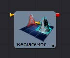
Controls

Pre-Weld Position Vertices
预焊位置顶点。有时位置顶点在几何物体中重复出现，即使它们的位置相同，也会导致法线/切线计算错误。预焊结果被丢弃；它们不影响输出几何物体的位置顶点。
Recompute
控制何时重新计算法线/切线。
- Always: mesh上的法线总是会被重新计算。
- If Not Present: mesh上的法线只有在不存在时才会重新计算。
- Never: 法线永远不会被计算出来。这个选项在动画制作时很有用。
Smoothing Angle
角小于这个角的相邻面，其邻接边将被平滑。平滑角的一个典型值可能在20到60度之间。对于0.0f和360.0f有特殊的情况代码。当设置为0.0f时，将生成分面法线；这对艺术效果很有用。
Ignore Smooth Groups
如果设置为False，具有不同光滑组的两个面将不会被平滑(例如，立方体的面或圆柱的顶部表面具有不同的光滑组)。如果你检查这个，并设置足够大的平滑角，立方体的表面将被平滑。目前还没有办法在Fusion中可视化平滑的组。
Flip Normals
翻转切线有时会令人困惑。如果mesh有切向量，翻转将产生效果。然而，大多数Fusion的mesh在到达Renderer3D之前都没有切向量。另外，在监视器中查看切向量时，如果切向量不存在，就会创建切向量。令人困惑的是，如果你查看一个没有切向量的Cube3D，然后按下FlipU/FlipV按钮，什么都不会发生。这是因为没有要创建的切向量，但是后来GL渲染器创建了一些(未翻转的)切向量。
已知问题： 如果法线不存在，FBX导入器将重新计算法线，但是您可以从这个工具获得更高质量的结果。凹凸贴图有时依赖于模型的法线。特别是，当您将一个复杂的高多边形模型简化为低多边形模型+ 凹凸贴图时，法线和凹凸贴图可以成为“链接的”。在这种情况下，重新计算法线会让模型看起来很有趣。凹凸贴图打算与这些法线一起使用。
Fusion中的大多数原型物体不是用切线生成的；当需要时，它们由Renderer3D动态生成并缓存。
切线目前只用于凹凸贴图。如果材质需要凹凸贴图，那么就创建切线。这些切线是用一些默认设置创建的(例如，平滑角，等等)，如果你不想要Fusion自动创建切线，你应该手动使用ReplaceNormals创建它们。
所有的计算都在几何物体的局部坐标中完成，而不是在ReplaceNormals3D工具的坐标系中完成。当在应用ReplaceNormals3D之前对几何物体应用了一个不均匀的比例时，这可能会导致问题。
Replicate 3D [3Rep]
Replicate 3D工具在目标顶点的位置复制输入几何物体。这包括mesh顶点和粒子位置。对于复制的输入几何物体的每个副本，可以应用各种转换。Jitter选项卡中的选项允许非均匀转换，例如随机定位或大小。
外部输入

Replicate3d.Destination
[橙色，必需的]这个输入需要一个有顶点位置的3D场景，无论是mesh还是3D粒子动画。
Replicate3d.Input[#]
[任意，必需的]这个输入需要一个将被复制的3D场景。一旦连接，一个为了交替三维场景的新的输入将创建。
Controls
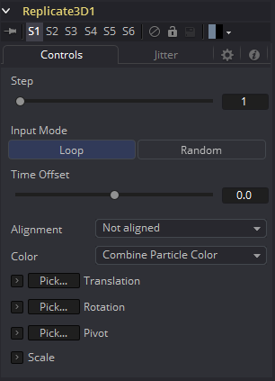
Step
定义跳过多少个位置。例如，步长3表示只使用目标mesh的每3个顶点位置，而步骤1表示使用所有位置。
Step有助于为大目标mesh保持合理的性能。在参数几何物体如圆环面，它可以用来隔离mesh的某些部分。
一旦设置了Make Renderable选项，点云在内部由6个点表示。为了获得单个点，使用步长6，并在Replicate3D中设置X偏移量-0.5，以到达点云的中心。对Locator3D使用-0.125。一旦这些被缩放，偏移量可能会不同。
Input Mode
它的参数定义了在目的地复制多个输入场景的顺序。如果只提供一个输入场景，这两个参数都不会有可见的效果。
使用Loop，输入被依次使用。第一个输入在第一个位置，第二个在第二个位置，以此类推。如果目标中出现的位置多于输入，则序列将被循环。
Random将根据Jitter选项卡中的种子为每个位置使用一个确定但随机的输入。 这种输入模式可用于模拟各种输入场景较少的情况。
粒子的死亡会导致它们的id发生变化，因此它们的复制顺序可能发生变化。

Time Offset
使用Time Offset滑块按每次复制的设置量偏移应用于源几何物体的任何动画。例如，将值设置为-1。并使用一个立方体集在y轴上旋转作为源。第一个拷贝将显示先前帧的动画。第二个拷贝将显示之前帧的动画，以此类推。
这可以在纹理平面上使用，例如，可以显示一个剪辑的连续帧。
Alignment
Alignment指定如何根据目标mesh的法线或粒子旋转对副本进行对齐。
Not Aligned: 不对齐副本。它保持在与输入mesh相同的方向上旋转。
Aligned: 这种模式使用点的法线，并试图重建一个上矢量。它最适合有非焊接顶点的有机mesh，比如导入的FBX mesh，因为它对相同位置的顶点具有相同的旋转。在平面几何mesh上，旋转方向的逐渐变化是显而易见的。为了获得最佳结果，建议在任何转换之前在原点使用此方法。

Aligned TBN: 结果在目标点的切线、副法线和法线的基础上得到更精确、更稳定的对齐。适用于粒子和几何物体。在非焊接mesh上，同一位置的多个非焊接点的两个副本由于各自的法线可能导致不同的对齐。

Color
根据输入的粒子颜色影响每个副本的漫反射颜色或着色器。
- Use Object Color: 不使用目标粒子的颜色。
- Combine Particle Color: 使用任何输入mesh的着色器，并修改漫反射颜色以匹配目标粒子的颜色。
- Use Particle Color: 用默认着色器替换所有输入mesh的完整着色器。 它的漫反射颜色取自目标粒子。

Translation
这三个滑块告诉工具要对每个副本应用多少偏移量。X偏移量为1时，每个复制单元偏移1；沿x轴从最后一个副本偏移1个单位。
Rotation Order
这些按钮可用于设置旋转应用于几何物体的顺序。将旋转顺序设置为XYZ将首先应用X轴上的旋转，然后是Y轴旋转，然后是Z轴旋转。
XYZ Rotation
这三个旋转滑块告诉工具要对每个副本应用多少旋转。
XYZ Pivot
枢轴控件确定旋转每个副本时使用的枢轴点的位置。当Lock XYZ复选框被选中时，对缩放的任何调整都将同时应用于所有三个轴。
如果禁用此复选框，则将用X、Y和Z缩放的单个滑块替换缩放滑块。
Scale
缩放控件设置应用于每个副本的缩放程度。
Jitter
Random Seed/Randomize
随机种子用于设置应用于复制对象的抖动量的种子。两个具有相同设置但不同随机种子的复制工具将产生两个完全不同的结果。单击Randomize按钮来分配随机种子值。
Time Offset
使用Time Offset滑块按每次复制的设置量偏移应用于源几何物体的任何动画。例如，将值设置为-1.0，并使用一个立方体集在y轴上旋转作为源。第一个拷贝将显示先前帧的动画。第二个拷贝将显示之前帧的动画，以此类推。这可以在纹理平面上使用，例如，可以显示一个剪辑的连续帧。
Translation XYZ Jitter
使用这三个控件来调整复制对象变换中的变化量。
Rotation XYZ Jitter
使用这三个控件来调整复制对象旋转中的变化量。
Pivot XYZ Jitter
使用这三个控件来调整复制对象旋转枢轴中心的变化量。这只影响附加的抖动旋转，而不影响Controls选项卡中的旋转设置所产生的旋转。
Scale XYZ Jitter
使用此控件可调整复制对象缩放中的变化量。取消勾选Lock XYZ复选框，以在所有三个轴上独立调整比例变化。
Ribbon 3D [3Ri]
Ribbon 3D生成一组细分线段或两点之间的单线。它对于MG动画非常有用，特别是在Replicate 3D时，可以将其他几何物体附加到线条上，在创建类闪电螺栓状结构时使用Displace 3D时更是如此。默认情况下，线的数组由纹理坐标赋值，因此它们可以与2D纹理一起使用。通常，UVMap 3D可以用来改变纹理坐标。这个工具严重依赖于OpenGL的某些特性，不会在软件渲染器中产生任何可见的结果。此外，绘制线条的方式完全取决于显卡供应商，因此任何工件都可能因显卡而异。
Controls
Number of Lines
在起点和终点之间画的平行线的数目。
Line Thickness
Line Thickness在用户界面中允许采用浮点值，但有些显卡只允许整数值。有些显卡可能只允许线条等于或大于1，或者在某个值上最大。
Subdivision Level
起始点和端点之间每一行上的顶点数。数值越大，一切三维置换都可以应用得越精确。
Ribbon Width
确定线之间的距离。
Start
XYZ控件设置带状的起始点。
End
控件来设置功能区的终结点。
Ribbon Rotation
允许色条带绕由起始点和终结点定义的虚拟轴旋转。
Antialiasing
允许您对渲染的行应用抗锯齿。不建议使用抗锯齿。当激活时，线段之间会有间隙。这在线厚度值较高时尤其明显。同样，画线的方式完全取决于显卡供应商，这意味着这些工件可能因显卡而异。
Shape 3D [3Sh]
Shape 3D工具用于生成几种基本的基础三维物体，包括平面、立方体、球体和圆柱体。
外部输入

Shape3d.SceneInput
[橙色，必需的]这个输入需要一个3D场景。
Shape3d.MaterialInput
[绿色，可选的]此输入将接受2D图像或3D材质。如果提供2D图像，它将作为一个漫反射(diffuse)纹理映射，用于工具内建的基本材质。如果连接了3D材质，则基本材质将被禁用。
Controls

Shape
选择这些选项之一，以确定形状3D工具将生成哪些几何基础物体。下面的控件将更改为匹配所选形状。
- Lock Width/Height/Depth: [plane, cube]如果选中此复选框，宽度、高度和深度控件将作为一个单一大小的滑块锁定在一起。否则，将提供沿每个轴对形状大小的单独控制。
- Size Width/Height/Depth: [plane, cube]用于控制形状的大小。
Cube Mapping
[Cube]使用立方体映射来应用Shape工具的纹理(连接到纹理输入的2D图像)。
Radius
[Sphere, Cylinder, Cone, Torus]设置所选形状的半径。
Top Radius
[Cone]此控件用于定义圆锥顶部的半径，使创建截短圆锥成为可能。
Start/End Angle
[Sphere, Cylinder, Cone, Torus]此范围控制决定绘制形状的扫描范围。180度的起始角和360度的结束角只能画出一半的形状。
Start/End Latitude
[Sphere, Torus]此范围控制用于通过定义对象的纬向子部分对对象进行切片。
Bottom/Top Cap
[Cylinder, Cone]仅用于圆柱体和锥体形状，底盖和顶盖复选框用于确定是否创建了这些形状的端盖，或形状是否保持打开状态。
Section
[Torus]只用于环面，截面控制组成环面管的厚度。
Subdivision Level/Base/Height
[All shapes]用于所有形状，细分控件用于确定构成对象的mesh的镶嵌。细分越高，每个形状的顶点就越多。
Wireframe
启用此复选框将导致mesh只渲染物体的线框图。
Visibility
Visible
如果没有选中Visibility复选框，则该对象将不会在监视器中可见，也不会被Renderer 3D工具渲染到输出图像中。不可见的物体不会投射阴影。
Unseen by Cameras
如果选择了Unseen by Cameras复选框，则对象将在监视器中可见(除非关闭了Visible复选框)，除非通过相机查看。对象不会被渲染器3D工具渲染到输出图像中。当软件渲染器渲染一个不可见的对象时，它所投射的阴影仍然是可见的，尽管OpenGL渲染器没有这样做。
Cull Front Face/Back Face
使用这些选项来剔除(消除)几何物体中某些多边形的渲染和显示。如果选择了Cull Back Face，所有背对相机的多边形都不会被渲染，也不会产生阴影。如果选择了Cull Front Face，所有面向摄像机的多边形也将被删除。选择这两个复选框与取消选择Visible复选框的效果相同。
Ignore Transparent Pixels in Aux Channels
在以前的Fusion版本中，Software/OpenGL渲染器拒绝透明像素。具体来说，软件渲染器拒绝R=G=B=A=0的像素，GL渲染器拒绝A=0的像素。现在这是可选的。这样做的原因可能是为了获得透明区域的辅助通道(例如，法线、Z、UV)。例如，假设做后期时，您想用在不同区域透明的纹理替换在特定区域透明的3D元素上的纹理，那么设置透明区域的辅助通道(特别是UV)将非常有用。再举一个例子，假设您正在做后期景深。您可能不希望将Z通道设置为透明区域，因为这会给您一个错误的深度。还要记住，这种拒绝是基于最终的像素颜色，包括灯光，如果它是开着的。所以如果你有一个镜面高光的透明玻璃材质，这个复选框不会影响它。
Lighting
Affected by Lights
如果不选中此复选框，场景中的灯光将不会影响到对象，它不会接收或投射阴影，并将以其颜色、纹理或材质的全亮度显示。
Shadow Caster
如果不启用此复选框，该对象将不会对场景中的其他对象投射阴影。
Shadow Receiver
如果不启用此复选框，该对象将不会接收场景中其他对象投射的阴影。
Matte
启用Is Matte选项将对该对象应用一个特殊的纹理，使该对象不仅对摄像机不可见，而且使直接出现在摄像机后面的所有内容也不可见。这个选项将覆盖所有纹理。有关更多信息，请参阅3D章节的matte objects部分。
Is Matte
当被激活时，像素在Z中的后于matte对象像素的对象不会被渲染。
Opaque Alpha
将matte对象的alpha值设置为1。此复选框仅在启用is Matte选项时可见。
Infinite Z
将Z通道中的值设置为无穷大。此复选框仅在启用is Matte选项时可见。
Blend Mode
Blend Mode指定渲染器在将此对象与场景的其余部分组合时将使用的方法。混合模式基本上与2D Merge工具文档中列出的模式相同。有关每种模式的详细说明，请参阅该工具的文档。
混合模式最初是为2D图像设计的。在光照的3D环境中使用它们会产生不希望的结果。为了获得最佳效果，请在软件中渲染的非光照3D场景中使用Apply模式。
OpenGL Blend Mode
使用此菜单选择OpenGL渲染程序处理几何物体时将使用的混合模式。这也是在监视器中查看对象时使用的模式。目前OpenGL渲染器支持三种混合模式。
Software Blend Mode
使用此菜单选择Software渲染器处理几何物体时将使用的混合模式。目前，Software渲染器支持Merge工具文档中描述的所有模式，但Dissolve模式除外。
Material选项卡
此选项卡中出现的选项决定了此工具创建的几何物体的外观。由于这些控件在生成几何物体的所有工具上都是相同的，因此在本文档的Common 3D Controls部分中对这些控件进行了全面描述。
如果一个外部3D材质被连接到工具块的材质输入，那么这个选项卡中的控件将被替换为“Using External Material”标签。

Transform选项卡
此选项卡中出现的选项决定了此工具创建的几何物体的位置。由于这些控件在生成几何物体的所有工具上都是相同的，因此在本文档的Common 3D Controls部分中对这些控件进行了全面描述。

Sphere Map与直接将纹理连接到Sphere
您可以直接将经纬(球面投影)纹理映射连接到一个球体，而不是首先通过连线将其连接到Sphere Map工具。如果您将起始/结束角和纬度设置为小于360°/180°，则会导致不同的渲染。在第一种情况下，纹理将被压扁。当使用Sphere Map工具时，纹理将被裁剪。 比较：
注意： 如果你直接将纹理导入球体，它也会被水平镜像。您可以首先使用Transform工具来“修复”这个问题。
Softclip [3Sc]
Softclip工具是用来淡出接近相机的几何物体和粒子。这有助于避免影响许多粒子系统和3D飞行的可见“弹出”。这个工具非常类似于Fog 3D工具，因为它依赖于几何物体与相机的距离。
Softclip工具通常放在渲染器之前，以确保下游的灯光和纹理调整不会影响结果。如果只需要对场景的一部分使用软裁剪效果，则可以将其放置在流的任何3D部分。
外部输入
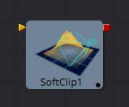
Softclip.SceneInput
[橙色，必需的]这个输入需要一个3D场景。
Controls
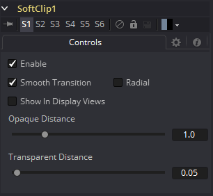
Enable
此复选框可用于启用或禁用该工具。
Smooth Transition
将线性梯度更改为曲线形状的梯度。
Radial
默认情况下，软裁剪是根据经过视点的平面(与近平面平行)的垂直距离来完成的。当选中径向选项时，使用到视点的径向距离而不是垂直距离。垂直距离软裁剪的问题在于，当你移动相机时，当截体左右两侧的物体移动到中心时，它们的剪切变少了，即使它们与眼睛的距离保持不变。径向软剪辑能修复这个。不过有时径向软裁剪是不可取的。
例如，如果您将软裁剪应用于靠近摄像机的对象，比如一个图像平面，图像平面的中心可以被不裁剪，而边缘可以被完全裁剪，因为它们离视点更远。
Show In Display Views
通常，这种效果只有在使用相机工具查看场景时才可见。当启用时，软剪辑在场景中从所有角度都可见。
Transparent/Opaque Distance
定义软剪辑的范围。在透明距离处，对象的不透明度将从0开始淡入，在不透明距离处完全可见。所有单元都表示为与相机沿Z轴的距离。
Text 3D [3Txt]
Text 3D工具是2D Text工具的3D版本。这个工具的控件几乎在所有方面都与2D版本的控件相同，只是它只支持一个着色元素。有关此工具中找到的控件的更多详细信息，请参见Text Plus。
Text 3D工具基于一个早于Fusion 3D环境工具。因此，在此工具的控件中找不到基本形状和几何载入器中找到的一些控件，例如许多材质、光照和matte选项。Text 3D工具有内置的材质，但与其他3D工具不同，它没有材质输入。Shading选项卡包含调整漫反射和高光组件的控件。要使用更高级的材质替换此默认材质，请跟随Text Plus工具和Replace Material 3D工具。Override 3D工具可用于控制该工具的照明、可视性和matte选项。
当网络渲染包含Text 3D工具的工程时，需要注意的一件事是，每台没有安装字体的机器都将失败。由于法律问题，Fusion不能共享或复制字体到Render Slaves。
外部输入

Text3d.SceneInput
[橙色，必需的]这个输入需要一个3D场景。
Text3d.ColorImage
[橙色，必需的]这个输入需要一个2D图像。只有在Material选项卡的Shading部分启用Image模式时，它才可见。
Text3d.BevelTexture
[橙色，必需的]这个输入需要一个2D图像。只有在Material选项卡的Shading部分启用Image模式时，它才可见。
（译注：Text3d.ColorImage 和Text3d.BevelTexture 的颜色为绿色或粉色，以开启Image模式先后为准。）
Text Extrusion


Extrusion Depth
挤压值为0生成完全的2D文本。任何大于0的值都将通过挤出文本生成具有深度的文本。
Bevel Depth
增加Bevel Depth滑块的值来倒角文本。文本必须经过挤压后，此控件才会生效。
Bevel Width
使用Bevel Width控件来增加倒角的宽度。
Smoothing Angle
使用此控件可调整应用于倒角的平滑角。
Front/Back Bevel
使用这些复选框可分别对文本的正面和背面启用倒角。
Custom Extrusion
在Custom模式下，Smoothing Angle控制文本字符边缘法线的平滑。样条本身控制沿挤压轮廓线的平滑。如果样条线段被平滑，例如使用快捷键Shift-S，法线也会被平滑。如果关键点是线性的，将会有一个锐利的阴影边缘。样条上的第一个和最后一个关键点定义了文本的范围。
Custom Extrusion Subdivisions: 控制挤压侧面的光滑部分内细分的数量。
提示： 记住样条也可以在Spline Editor选项卡中编辑，您不必使用 Text3D. ExtrusionProfile曲线控件有限的功能和大小。不要尝试将正面/背面的尺寸调到零。这将导致自交面产生的Z冲突。为了避免这个问题，请确保第一个和最后一个点的侧面设置为0。
Shading
Opacity
降低材质的不透明度将同样降低高光和漫反射颜色的颜色和alpha值，使材质透明，并允许隐藏的物体通过材质被看到。
Use One Material
取消选择此选项将显示文本斜边的第二组材质控件。
Material
Type
要使用纯色纹理，请选择Solid模式。选择图像模式将在工具栏上显示一个新的外部输入，可以连接到另一个2D图像。
Specular Color
Specular Color决定了从光亮表面反射的光的颜色。一种材料的高光越高，它看起来就越有光泽。像塑料和玻璃这样的表面往往有白色的高光，而像黄金这样的金属表面则有继承于材质颜色的高光。基本着色器材质不提供纹理输入来控制对象的高光性。当需要对高光外观进行更精确的控制时，可以使用3D Material类别中的工具。
Specular Intensity
Specular Intensity控制高光的强度。如果高光强度纹理端口有一个有效的输入，那么这个值乘以输入的alpha值。
Specular Exponent
Specular Exponent控制高光的衰减。值越大，衰减越明显，材质就显得越光滑和有光泽。基本着色器材质不提供纹理输入来控制对象的高光指数。当需要对高光指数进行更精确的控制时，请使用3D Material类别中的工具。
Image Source
此控件确定应用于该材料的纹理的来源。如果将该选项设置为Tool，则会在工具块上显示一个输入，该输入可用于将2D工具的输出应用于纹理。Selecting Clip将显示一个文件浏览器，该浏览器可用于从磁盘中选择图像或图像序列。Brush选项将提供一个在Fusion\Brush文件夹中找到的剪辑列表。
Bevel Material
此显示框仅在（译注：不）选中Use One Material复选框控件时出现。此显示项下的控件与上述材质控件的完全一致，但仅应用于文本倒角。
Transform
这些控件可用于变换应用于文本的材质。有关这些工具的完整描述，请参见Text Plus工具。
Tips for Text3D
Character Level Styling
Text 3D工具不直接支持Character Level Styling。您必须首先创建一个Text+工具，并使用Character Level Styling修改器修改其文本字段。然后，将Text 3D的文本字段连接到现在可用的修饰符，或复制Text+工具并将其设置粘贴到Text 3D工具(右键单击>Paste Settings)。
Uncapped 3D Text
若要隐藏挤出文本的正面，取消勾选Shading选项卡上的Use One Material，并将第一种材质的颜色(包括其alpha值)降为黑色。
Transform 3D [3Xf]
Transform 3D工具可以用来平移、旋转或缩放场景中的所有元素，而不需要Merge 3D工具。这对于层次化变换，或者偏移多次合并到场景中的对象都很有用。它的控件与其他3D工具的Transformation选项卡中的控件相同。
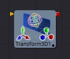
3D Transform Tab

Translation
X, Y, Z Offset
这些控件可用于定位3D元素。
Rotation
Rotation Order
使用这些按钮来选择用于沿着对象的每个轴应用旋转的顺序。例如，XYZ首先对X轴进行旋转，然后是Y轴，然后是Z轴。
X, Y, Z Rotation
使用这些控件使对象围绕其轴心点旋转。如果选择了Use Target复选框，则旋转相对于目标的位置，否则使用全局轴。
Pivot Controls
X, Y, Z Pivot
轴心点是物体旋转的点。通常，一个物体会绕着它自己的中心旋转，这个中心被认为是0,0,0的轴心。这些控件可用于从中心偏移轴心。
Scale
X, Y, Z Scale
如果选中Lock X/Y/Z复选框，将显示一个缩放滑块。这将调整对象的总体大小。如果未选中Lock复选框，则将显示单独的X、Y和Z滑块，以允许在任何维度上缩放。
注意： 如果选中Lock复选框，就不可能缩放单个维度，即使在缩放模式下拖动Transformation小部件的特定轴也是如此。
Use Target
选择Use Target复选框可以启用一组用于定位XYZ目标的控件。当目标被启用时，对象将始终旋转以面对目标。物体的旋转与目标相对。
Import Transform
打开文件浏览器，在其中可以选择3D应用程序保存或导出的场景文件。它支持以下文件类型：
| 文件类型 | 文件后缀 |
|---|---|
| LightWave场景 | .lws |
| Max场景 | .ase |
| Maya Ascii场景 | .ma |
| dotXSI | .xsi |
Import Transform按钮将只导入变换数据。对于3D几何物体、灯光和摄像机，考虑使用菜单中的File > FBX Import选项。
On Screen Transformation Widget
Transformation Widget表示监视器中此选项卡中的大多数控件，具有平移、旋转和缩放模式。要更改小部件的模式，请选择监视器一侧工具栏中的三个按钮之一。这些模式也可以通过键盘快捷键Q来平移，用W来旋转，用E来缩放。在所有三种模式中，可以拖动控件的单个轴来只影响该轴，或者拖动控件的中心来影响所有三个轴。
大多数3D工具的缩放滑块默认为锁定，这导致三个轴的缩放一致。解锁Lock X/Y/Z Scale复选框，只缩放单个轴上的对象。

Triangulate 3D [3Tri]
这个工具没有控件。它对任何四边形或凸多边形进行三角剖分。


UV Map 3D [3UV]
UV map 3D工具替换了场景中几何物体上的UV纹理坐标。这些坐标告诉Fusion如何将纹理应用到对象上。该工具提供了平面、圆柱、球面、XYZ和立方映射模式，可以应用于基本的Fusion基础物体以及导入的几何物体。可以调整纹理坐标的位置、旋转和比例，以便对纹理的外观进行精细控制。还提供了一个选项，根据参考帧将该工具生成的UV锁定为动画几何物体。这可以用来确保应用于动画几何物体的纹理不会滑动。
虽然可以调整所选映射模式的全局属性，但不能直接从Fusion中操作单个顶点的UV坐标。 在监视器中绘制的屏幕控件仅供参考，不能操纵。
外部输入

UVMap3d.SceneInput
[橙色，必需的]这个输入需要一个3D场景。
UVMap3d.CameraInput
[绿色，可选的]这个输入需要一个Camera 3D工具的输出。它只在使用Camera Map模式时可见。
Camera Projections with UV Map 3D
Camera Mapping模式使得通过相机将纹理坐标投射到几何物体上成为可能。在UV Map 3D工具上启用Camera Mapping模式。直接将用于创建UV坐标的相机连接到流中UV Map 3D工具块上出现的新的“Camera”输入。
注意，这并不直接通过相机投射图像。要投影的图像应该连接到指定给对象的任何材质的漫反射纹理输入。当纹理被应用时，它将使用相机创建的UV坐标。因为这是一个纹理投影而不是光，纹理的alpha通道将正确地设置几何物体的不透明度。
请参阅Camera 3D和Projector 3D工具了解投影的其他方法。
当投影出现在选定的帧上时，可以选择将其锁定到顶点。如果mesh中的顶点数量随时间变化，这将失败，因为Fusion必须能够在参考时间和当前时间匹配mesh。更具体地说，顶点不能被创建、销毁或重新排序。由于这个原因，投影锁定不适用于许多粒子系统、具有动画细分的基础物体以及使用非零时间偏移量的duplicate工具。
注意： UV Map 3D工具不把纹理或材质放到mesh上，它只修改材质将使用的纹理坐标。这可能令人困惑，因为材质通常位于上游。例如，一个工程这样包含包含工具：Loader > Blinn > Shape 3D (cube) > UV Map 3D > Renderer 3D。
Controls
Map Mode
定义如何创建纹理坐标。把它想象成一个虚拟的几何体，将UV空间投射到物体上。
- Planar: 使用平面创建UV坐标。
- Cylindrical: 使用圆柱形对象创建UV坐标。
- Spherical: 使用球体创建UV坐标。
- XYZ to UVW: 将顶点的位置坐标直接转换为uvw坐标。这用于处理过程纹理。
- CubeMap: 使用立方体创建UV坐标。
- Camera: 启用工具的Camera Input端口。将相机与之连接后，基于相机投影创建纹理坐标。
Orientation X/Y/Z
定义用于对齐Map Mode的参考轴。
Fit
单击此按钮将使Map Mode适合于输入场景的边框。
Center
单击此按钮将Map Mode的中心移动到输入场景的边框中心。
Lock UVs on Animated Objects
如果对象是动画的，uv可以锁定到它。启用此选项将完成此操作，并显示Ref Time滑块，在那里可以为UV映射选择一个参考帧。使用这个特性，不需要对uv映射参数进行动画。在参考时间设置UV贴图就足够了。
Size X/Y/Z
定义投影对象的大小。
Center X/Y/Z
定义投影对象的位置。
Rotation/Rotation Order
使用这些按钮来选择用于沿着对象的每个轴应用旋转的顺序。例如，XYZ首先对X轴进行旋转，然后是Y轴，然后是Z轴。
Rotation X/Y/Z
根据旋转顺序为每个轴设置投影对象的方向。
Tile u/v/w
定义纹理在对应轴上与投影UV空间的匹配频率。注意，UVW坐标被转换，而不是纹理。当与Create Texture工具一起使用时效果最好。
Flip u/v/w
镜像翻转纹理坐标周围的参考轴。
Flip Faces (CubeMap mode only)
将纹理坐标映射到立方体的各个面上。
注意： 为了充分利用UV Map 3D工具的功能，要先对2D图像如何映射到3D几何物体有一个基本的了解。当二维图像应用于三维表面时，它被转换成一个纹理映射，使用UV坐标来确定图像如何转换到对象。mesh上的每个顶点都有一个(U, V)纹理坐标对，用于描述对象在展开和平展时的外观。不同的映射模式使用不同的方法来计算顶点如何转换成平面二维纹理。当使用UV Map 3D工具修改mesh上的纹理坐标时，最好使用mesh或基础物体的默认坐标系统。因此，典型的工作流将看起来像Shape 3D > UV Map 3D > Transform 3D。Shape工具上的Transform选项卡将保留其默认值，而紧随UV Map 3D之后的Transform 3D工具将执行将工具放置到场景中所需的任何调整。修改/制作动画Shape工具的变换将导致纹理滑过形状，这通常是不可取的。UV Map 3D工具修改每个顶点的纹理坐标，而不是每个像素。如果应用UV映射的几何物体镶嵌得不好，那么可能会出现不希望出现的伪影。
Weld 3D [3We]
有时3D几何物体有一些本该连接但没有连接的顶点。这可能导致一些缺陷，特别是当两个顶点有不同的法线时。
例如：
- 不同的法线将产生一个意料之外的硬阴影/光照边缘；
- 如果你试图沿着法线替换三维顶点，会出现裂缝；
- 在所渲染的图像中缺少像素或像素重叠；
- 粒子通过微小的看不见的裂缝。
Weld3D工具允许您在Fusion中完成这一操作，而不是返回到您的3D建模应用程序来修复“重复的”顶点。Weld3D会焊接具有相同或几乎相同位置的顶点。这可以用于修复顶点在Displace前通过焊接几何物体而置换时的开裂问题。没有用于选择顶点的用户控件。目前，这个工具焊接在一起只是位置顶点；它不焊接法线，纹理，或任何其他顶点流。因此，即使两个顶点的位置相同，它们的法线仍然有它们原来的值。在某些情况下，这可能导致硬边。

Controls

Fracture
断裂是焊接的对立面，所以所有的顶点都是不焊接的。这意味着所有的多边形邻接信息都丢失了。例如，Imageplane3D通常由共享顶点的连接四边形组成。破碎的图像平面使它成为一堆不相连的四边形。
Tolerance
在自动模式下，将自动检测到Tolerance。这在大多数情况下都是可行的。如果需要，还可以手动调整。
用法
当几何物体出现问题时，使用Weld3D。不要仅仅因为它在那里就到处使用它，因为它会影响渲染时间。
Weld3D的目的是作为一个mesh健壮性工具，而不是作为一个mesh编辑工具合并顶点。如果您可以在3D视图中看到要焊接的顶点之间的间隙，那么您可能正在滥用Weld3D。当你这样做的时候，意想不到的事情可能会发生；这样做的后果自负。
当前的问题
设置太大的容差值(Tolerance)会导致边缘/面折叠到点。
如果您的模型的细节分布在几个级别上，那么选择一个容差值可能是困难的，也可能是不可能的。
例如，假设你有一个ISS的模型，里面有很多大的多边形和非常小的多边形。如果你把公差设置得太大，小多边形就会被合并，这是不应该的；如果您将公差设置得太小，一些较大的多边形将不会被合并。
远离原点的顶点可能无法正确合并。这是因为大数字+小数字在浮点数运算中完全可以等于大数字。这是最好在本地坐标系中合并而不是在世界坐标系中合并的原因之一。
有时焊接mesh会使事情变得更糟。以Fusion的圆锥为例。圆锥的顶部顶点目前为每个相邻的面复制，它们都有不同的法线。如果你焊接圆锥，顶部的顶点会合并在一起，只有一个法线，使照明看起来很奇怪。
Weld3D不是多线程的。
警告
不要滥用Weld3D来简化mesh(减少多边形数)。它的设计是为了有效地焊接只有非常小的值不同的顶点，如0.001的距离。
Modifier
Coordinate Transform 3D
由于Fusion 3D流程的层次性，物体在三维场景中的初始位置往往不能反映出物体的当前位置。例如，一个图像平面最初的位置可能是1, 2, 1，但随后在3D场景中被进一步下游的其他工具缩放、偏移和旋转，最终的绝对位置可能是10, 20, 5。
这可能使将组合中较下游的对象直接连接到上游对象的位置变得复杂。Coordinate Transform修饰器可以添加到任意一组XYZ坐标控件中，并将计算场景层次结构中给定对象的当前位置。
要添加Coordinate Transform修饰符，只需右键单击任何工具上的数字输入，并从Controls上下文菜单中选择Modify With/CoordTransform Position。
Controls Tab
Target Object
此控件应连接到生成要转换的原始坐标的3D工具。要连接一个工具，可以将一个工具块从流程拖放到文本编辑控件中，或者右键单击该控件并从上下文菜单中选择该工具。还可以直接在控件中键入工具名。
Sub-ID
SubID滑块可用于针对特定几何类型的单个子元素，例如Text 3D工具生成的单个字符或复制3D工具创建的特定副本。
Scene Input
此控件应连接到包含新位置对象的场景的3D工具。要连接一个工具，可以将一个工具块从流拖放到文本编辑控件中，或者右键单击该控件并从Connect To弹出菜单中选择一个对象。